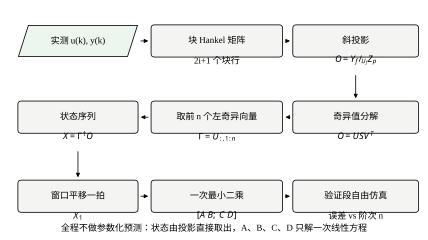
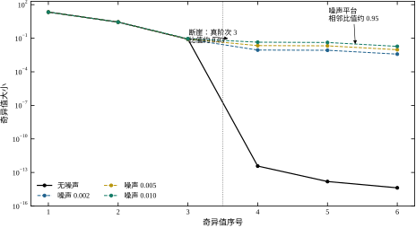
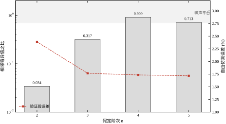
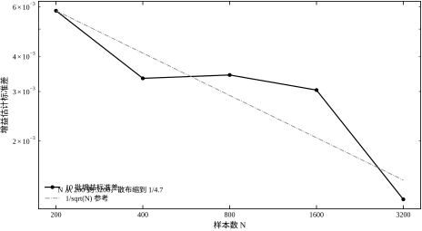
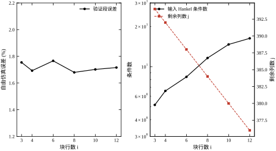
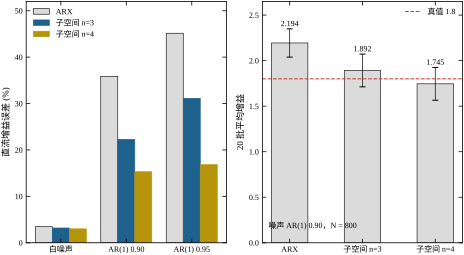

第 19 章收尾时留了一个还算体面的结果：AR(1) 噪声、\rho=0.95 时，最小二乘把增益 1.8 估成 2.2986（+27.70%），GLS 把它压到 +7.21%，工具变量压到 +0.21%。那一章的三条出路都是“在参数化预测的框架内做修正”——改权、改回归量、改预测器，但都还在解一组以 \theta 为未知数的方程。
本章换一个更苛刻的对照。同一个对象、同样 800 点、同样相对阶，只把噪声换成 AR(1)、\rho=0.90，ARX 最小二乘给出的增益是 2.4457，偏 +35.87%；\rho=0.95 时是 2.6128，偏 +45.15%。两次的验证段自由仿真误差分别是 33.13% 与 36.60%——模型在验证段几乎不能用。
换成 20 批蒙特卡洛（种子 900–919），ARX 的增益均值 2.1938 ± 0.1553，平均偏差 +21.88%。20 次全都落在真值上方，标准差只有 0.1553，却背着 21.88% 的偏差。这正是第 19 章 §19.1.1 说的第二层失败：多测几批、多取平均，只会让你更自信地停在错的地方。
同一批数据交给本章的方法，n=3 时增益均值 1.8920 ± 0.1800（+5.11%），n=4 时 1.7454 ± 0.1803（−3.03%）。偏差从 21.88% 掉到 5.11% 甚至 −3.03%，代价是标准差从 0.1553 涨到 0.1800。
这个对照里藏着本章要回答的全部问题：为什么一个“没有显式建模噪声”的方法，在有色噪声下反而比最小二乘稳？它又付出了什么代价？
ARX 的出发点是一步预测：
\hat y_k=-\sum_{i=1}^{n_a}a_i y_{k-i}+\sum_{j=0}^{n_b-1}b_j u_{k-n_k-j} \tag{20-1}
它的未知量是 \theta=[a_1,\dots,a_{n_a},b_0,\dots]^{\top}，回归向量 \varphi_k 的前几项是历史 y。第 18、19 章反复说明过：历史 y 里含着历史噪声，于是 \mathbb{E}[\varphi_k e_k]\neq0，最小二乘的均值就偏了。
子空间辨识不问“下一步输出是多少”。它问一个完全不同的问题：把这段输入输出数据堆成一个矩阵，这个矩阵的列空间有几维、由哪些方向张成？
答案与对象的阶次、能观性矩阵直接相关，而与“噪声怎么进模型”关系不大。噪声确实会进入这个矩阵，但它进入的方式是“把每个奇异值抬高一点”，而不是“把主要方向转一个角度”。主要方向没转，估出来的极点与增益就不会系统性偏移。
这句话是本章的骨架，后面 §20.3.7 会给出精确版本：子空间方法只要求输入与噪声不相关（\mathbb{E}[u_k e_k]=0），不要求噪声是白的。 最小二乘要求的是更强的条件——回归向量与噪声不相关，而回归向量里有 y，这个条件在有噪声时永远不成立。
第一句：把 u、y 各自堆成块 Hankel 矩阵。 每一列是一个长度为 2i+1 的窗口，相邻列整体右移一拍。这一步不丢信息，只是把“时间序列”重排成“窗口的集合”。
第二句：做一次斜投影。 把未来输入 U_f 能解释的部分从未来输出 Y_f 里剔掉，再把剩下的部分投影到“过去数据 Z_p”张成的空间上。得到的矩阵记作 O，它的列空间恰好等于能观性矩阵 \Gamma 的列空间。这是整个方法唯一的“魔法”，也是本章 §20.3 要逐项拆开的部分。
第三句：对 O 做奇异值分解，取前 n 个左奇异向量当 \Gamma，反解出状态序列 X，再解一次最小二乘得到 A,B,C,D。 状态不是“猜”出来的，是从投影矩阵的列空间里“读”出来的；A,B,C,D 不是迭代优化出来的，是一次线性方程的解。
图 20-1 是这条链路的完整流程图。注意图中没有任何“优化”“迭代”“初值”的框——这是子空间方法与第 19 章三种方法最直观的区别。

如果只讲上面三句话，读者会以为子空间方法全面优于最小二乘。事实不是这样。本章的实验会一项一项把代价摊开：
代价一：方差更大。 20 批蒙特卡洛里，ARX 的标准差 0.1553，子空间 0.1800，大了 16%。原因在 §20.3.8：投影会把噪声沿某些方向放大，而最小二乘至少有“用全部数据平均”的效应。
代价二：阶次必须选对，而且比 ARX 更敏感。 n=3 偏 +5.11%，n=4 偏 −3.03%——符号相反。多算一阶，偏差就从正翻到负。ARX 加阶只是把偏差摊薄，子空间加阶会把一个假的快模态塞进 A，直接改变直流增益。
代价三：激励频带必须覆盖快模态。 激励保持 1 拍时，输出标准差只有 0.1783，快极点 0.189 被估成 0.067，极点偏差 0.1217；保持 3 拍时偏差降到 0.0279。这不是算法的问题，是数据里根本没有那个频段的信息。
代价四：块行数 i 不能随便取。 i=3 时增益偏 +0.47%，i=6 时 −0.06%；但 i 从 3 增到 12，输入 Hankel 的条件数从 5.2 涨到 16.3，剩余列数从 394 掉到 376。i 太小，过去窗口装不下对象的状态；i 太大，数值条件变差。
四项代价合起来给本章定了一个基调：子空间方法不是“更好的最小二乘”，它是另一种取舍。 它用“不建模噪声”换来了“对噪声颜色不敏感”，代价是对阶次、激励、窗口长度更挑剔。用对了场合，它比 LS 好一个数量级；用错了场合，它比 LS 还差。
对象沿用第 18、19 章：
G(s)=\frac{1.8}{(0.5s+1)(0.12s+1)(0.03s+1)}e^{-0.04s} \tag{20-2}
T_s=0.05 s。采样后是 3 阶、相对阶 1 的离散系统，真实极点为 +0.1889、+0.6592、+0.9048，全是实极点，没有振荡。直流增益 1.8。
与前面两章不同的一点：本章的数据由状态空间产生，过程噪声从输入端进（Bw），测量噪声加在输出端（v）。这样做的原因是子空间方法本身就工作在状态空间里，用状态空间生成数据可以避免“离散化方式不同”带来的额外误差。为了保证与第 18 章的 ARX 逐位可比，离散状态空间由 base.discrete_arx(TS) 得到的 b,a 经 scipy.signal.tf2ss 转换而来，实测两条通路的确定性部分最大差 3.0e−15。
数据的切分是前 2/3 辨识、后 1/3 验证。这一点在 §20.6.1 会解释：最初按一半一半切，验证段只有 400 点，噪声占主导，导致 n=4、n=5 的验证误差反而略低于 n=3，阶次判据被噪声淹没。改成 2/3 之后，验证误差才恢复单调。
名义工况是：样本 800 点、块行数 i=6、阶次 n=3、测量噪声标准差 \sigma_v=0.005、过程噪声 \sigma_w=0.0005、激励为保持 3 拍的 PRBS（钟周期 0.15 s）。此时输入标准差 0.4984，输出标准差 0.3276，信噪比 36.3 dB。
§20.2 把块 Hankel、斜投影、能观性矩阵这三个对象定义清楚，并给出记号表。§20.3 推导 O=\Gamma X 这个恒等式，说明为什么必须投掉未来输入、为什么必须用过去、为什么斜投影不能退化成两次正交投影。§20.4 给出离散实现：两个残差函数怎么写、SVD 怎么调、一次最小二乘怎么摆。§20.5 讨论工程边界：什么时候该用、阶次怎么定、激励怎么给、交付什么。§20.6 是八个实验，全部数字来自 code/ch020_sim.py。§20.7 收口。
八个实验各自回答一个问题，读者可以先看表 20-1 决定跳读顺序。
| 实验 | 问题 | 关键数字 | 对应小节 |
|---|---|---|---|
| 0 | 数据与 Hankel 矩阵的规模 | \mathrm{cond}(U) 6.7→15.9 | §20.6.1 |
| 1 | 阶次写在奇异值谱的哪里 | s_3/s_2=0.030 | §20.6.2 |
| 2 | n=3 时精度如何 | 增益 −0.06%，验证 1.77% | §20.6.3 |
| 3 | 阶次选错会怎样 | n=4 出现 −0.705 假极点 | §20.6.4 |
| 4 | 数据要多少 | N 增 16 倍，散布降 4.7 倍 | §20.6.5 |
| 5 | 块行数 i 取多少 | i=3 偏 +0.47% | §20.6.6 |
| 6 | 激励频带要不要管 | 保持 1 拍时极点偏差 0.1217 | §20.6.7 |
| 7 | 与 ARX 比到底赢在哪 | +21.88% vs +5.11% | §20.6.8 |
三条边界先说清楚，免得读者在后面几节里找不存在的东西。
不覆盖闭环。 全章假设输入是“外加的、与噪声无关的”激励（假设 A3）。一旦输入由输出反馈产生，这条假设就破了，斜投影不再干净。闭环辨识是第 21 章的主题，那里会给三条出路。
不覆盖非线性与时变。 恒等式 (20-12) 依赖线性叠加；死区、饱和、摩擦都会让“投影后只剩状态”这句话失效。这一类对象属于第 22 章。参数慢漂属于第 23 章，那里的做法是把批处理的 SVD 换成递推形式，或分段重估。
不覆盖频域方法。 本章从头到尾在时域堆矩阵，与第 17 章的频域辨识是两条独立的路。两者可以互相校验（把时域模型转成频响，与频域估计比对），但推导不共享。
读法上给一条建议：若只想知道“能不能用、怎么用”，读 §20.1、§20.5、§20.7 三节即可，§20.6 的实验按需查表；若想自己实现一遍，§20.2 到 §20.4 必须按顺序读，因为 §20.4 的代码里每一行都对应 §20.3 的一个式子。
本章的对象写成离散状态空间：
x_{k+1}=Ax_k+Bu_k,\qquad y_k=Cx_k+Du_k \tag{20-3}
x_k\in\mathbb{R}^{n}，u_k\in\mathbb{R}^{m}，y_k\in\mathbb{R}^{p}。本章的仿真里 m=p=1，n=3，D=0（相对阶为 1）。但推导按多变量写，因为子空间方法最大的用处正是多变量场合——这一点 §20.5.1 会展开。
由式 (20-3) 反复代入，可以把 y_{k} 用 x_{k-i} 与这一段输入表示出来：
y_k=CA^{i}x_{k-i}+\sum_{l=0}^{i-1}CA^{l}Bu_{k-i+l}+Du_k \tag{20-4}
把 i 个时刻排成一列，就出现一个只跟 A,C 有关的矩阵：
\Gamma_i=\begin{bmatrix}C\\ CA\\ \vdots\\ CA^{i-1}\end{bmatrix}\in\mathbb{R}^{ip\times n} \tag{20-5}
这个矩阵叫能观性矩阵。它的含义是：如果知道 x_{k-i}，那么未来 i 步的输出（在没有输入、没有噪声时）就是 \Gamma_i x_{k-i}。它的列空间是 n 维的，前提是对象能观（\mathrm{rank}\,\Gamma_i=n，i\ge n）。
子空间辨识的全部内容，就是想办法从数据里把这个列空间估出来。 只要列空间对了，\Gamma_i 就在相差一个相似变换的意义下被确定；再由 \Gamma_i 的平移结构（去掉第一块行、在底部补一块行）反解出 A 与 C。这段话就是 §20.3.5 要严格化的内容。
给定长度为 N 的输入序列 u_0,\dots,u_{N-1}，取块行数 i，定义
U_{0:i-1}=\begin{bmatrix} u_0 & u_1 & \cdots & u_{j-1}\\ u_1 & u_2 & \cdots & u_j\\ \vdots & \vdots & & \vdots\\ u_{i-1} & u_i & \cdots & u_{i+j-2} \end{bmatrix}\in\mathbb{R}^{im\times j} \tag{20-6}
其中 j=N-i+1。这个矩阵叫块 Hankel 矩阵：每一列是一个长度为 i 的窗口，下一列整体右移一拍；每一行块是一个时刻的 m 维输入。它不丢信息，只是把“一条时间序列”重排成“j 个互相重叠的窗口”。
块 Hankel 有两个性质后面要用：
第一，行数固定时，列数随 N 线性增长。 i=6、N=800 时 j=789；N=3200 时 j=3189。样本越多，方程越多，这是子空间方法方差随 N 下降的来源。
第二，相邻两列高度相关。 第 t 列与第 t+1 列有 i-1 个元素是重复的。这让 UU^{\top} 的条件数随 i 增大而变差，是 §20.5.4 里“i 不能太大”的根源。
本章的实现取 2i+1 个块行，而不是常见的 2i 个。多出的那一块是为了让“当前时刻” u_i、y_i 单独成一行，供 §20.3.6 的一次最小二乘使用。若取 2i 个块行，当前时刻要单独从原始序列里取，代码会长一点，结果一致。
把 2i+1 个块行的 Hankel 从中间切开，前 i 块叫“过去”，后 i 块叫“未来”：
U_p=U_{0:i-1},\quad U_f=U_{i:2i-1},\quad Y_p=Y_{0:i-1},\quad Y_f=Y_{i:2i-1} \tag{20-7}
再把过去的两块竖着摞起来：
Z_p=\begin{bmatrix}Y_p\\ U_p\end{bmatrix}\in\mathbb{R}^{i(p+m)\times j} \tag{20-8}
Z_p 是本章唯一一个“信息载体”。它的作用是：把“当前状态 x_i 是什么”这件事，换成“过去 i 步的输入输出长什么样”。 因为对能观系统，x_i 完全由 \{u_{0:i-1},y_{0:i-1}\} 决定——这就是“状态”的定义。
之所以不能只用 Y_p，是因为输出里既有状态的信息，也有输入的直接贡献（Du 项与 B 项）。把 U_p 一起放进去，才能把“输入推出来的那部分输出”与“状态自己演化出来的那部分输出”分开。这也解释了为什么第 19 章的工具变量要取“过去的 u”——两件事在几何上是同一件。
U_f 是“未来输入”。它在数据里是已知的（辨识实验里输入是我们自己给的），但它会直接影响 Y_f。如果不在投影时把它剔掉，Y_f 的主要成分将是 U_f 的响应，而不是状态的响应，\Gamma 就估不出来。
设 Z 是 q\times j 的行满秩矩阵。到 Z 行空间上的正交投影算子是
\Pi_Z=Z^{\top}(ZZ^{\top})^{-1}Z \tag{20-9}
Y\Pi_Z 是 Y 在 Z 行空间上的分量，Y\Pi_Z^{\perp}=Y(I-\Pi_Z) 是残差。这两个量在最小二乘里天天出现：拟合值就是 Y\Pi_Z，残差就是 Y\Pi_Z^{\perp}。
斜投影是两个空间的事。给定 Y、Z 与 U，Y 沿 U 的方向投影到 Z 的行空间上，记作 Y/_{U}Z，定义为
Y/_{U}Z=Y\Pi_U^{\perp}Z^{\top}\left(Z\Pi_U^{\perp}Z^{\top}\right)^{\dagger}Z \tag{20-10}
用文字说：先把 Y 与 Z 里“能被 U 解释的部分”都减掉，得到 Y\Pi_U^{\perp} 与 Z\Pi_U^{\perp}；再用后者对前者做一次最小二乘，最后乘回 Z。所以斜投影 = 两次残差 + 一次回归，全部是线性运算，没有迭代。
第 20.3.4 会说明：这三个动作的顺序不能换。若先正交投掉 Z_p 再对 U_f 做残差，得到的是另一个算子，实测 i=6 时增益掉到 1.53。
现在可以把本章的中心结论写出来了。在式 (20-3) 的模型下，定义
X_i=\begin{bmatrix}x_i & x_{i+1} & \cdots & x_{i+j-1}\end{bmatrix}\in\mathbb{R}^{n\times j} \tag{20-11}
则有
\Gamma_iX_i=Y_f/_{U_f}Z_p \tag{20-12}
右边正是 §20.2.4 定义的斜投影，左边是能观性矩阵乘状态序列。这个式子的意思是：斜投影的结果，恰好是“未来 i 步输出里，由 t=i 时刻的状态决定的那一部分”，而且它按 \Gamma_i 的方式排列。
式 (20-12) 是本章所有算法的出发点。它的证明在 §20.3.1–§20.3.4。这里先指出它能干什么：右边完全由数据算出（Z_p、U_f、Y_f 都是已知的 u,y 堆出来的），左边是两个未知矩阵的乘积。于是“辨识”变成“矩阵分解”：对右边做 SVD，前 n 个左奇异向量张成的空间就是 \Gamma_i 的列空间；有了 \Gamma_i，X_i 由最小二乘解出；有了 X_i，A,B,C,D 由一次线性回归解出。
式 (20-12) 成立需要四条假设。列出来，并说明每一条在本章实验里怎么被检验。
A1：对象在窗口内是 LTI 的，阶次 n 有限。 这条假设把“时变”“非线性”“分布参数”排除在外。第 22 章会专门处理非线性；本章的实验全部在 LTI 对象上做。
A2：输入持续激励，U_{0:2i-1} 行满秩。 若输入是常数或只有一两个频点，Hankel 矩阵会降秩，斜投影的分母 (Z_p\Pi_{U_f}^{\perp}Z_p^{\top}) 会奇异。§20.6.1 用条件数监测这一条：i=4 时 \mathrm{cond}(U)=6.7，i=12 时 15.9，都还算健康；若用阶跃输入，条件数会到 10^{10} 以上。
A3：输入与噪声不相关，\mathbb{E}[u_k e_l]=0。 这是子空间方法唯一关于噪声的假设。注意它比“噪声是白的”弱得多：AR(1)、AR(2)、甚至有色但与非输入相关的噪声都满足。反过来，闭环数据会破坏它——闭环里 u_k 是 y_{k-1} 的函数，y_{k-1} 含 e_{k-1}，相关性就出来了。这是 §20.5.6 的主题，也是第 21 章要解决的问题。
A4：i\ge n，且 j 足够大。 i 至少要等于阶次，否则过去窗口装不下全部状态；j 要远大于 i(p+m)，否则回归是欠定的。本章名义工况 i=6、n=3、j=789，余量充足。
文献里子空间辨识有三条主线，名字不同，骨架相同：
N4SID（Numerical algorithms for Subspace State Space System IDentification）在式 (20-12) 两边各乘一个加权矩阵 W_1 与 W_2：W_1OW_2。不同的加权对应不同的统计最优性。它的原始论文用 QR 分解实现，避免显式构造投影。
MOESP（Multivariable Output-Error State sPace）取 W_1=I，并且只用 U_f 做消除、不做加权。本章采用它的“过去辅助”版本 PO-MOESP（Past-Oriented MOESP），即式 (20-12) 里同时用 U_f 与 Z_p。
CVA（Canonical Variate Analysis）的加权来自协方差矩阵，等价于对过去与未来做典型相关分析。它在信噪比很低时表现更好，代价是要额外估两个协方差矩阵。
三者的差别只在“怎么加权”，不在“用不用 SVD”。本章选 PO-MOESP 的理由是它最简单：不加权，斜投影一步到位，代码不到 30 行，便于逐行核对。§20.5.2 会说明加权在什么场合值得加。
表 20-2 把本章的记号集中列出，后文不再重复定义。
| 记号 | 维度 | 含义 |
|---|---|---|
| n,m,p | 标量 | 阶次、输入维数、输出维数（本章 3,1,1） |
| i | 标量 | 块行数（过去/未来各 i 块） |
| j | 标量 | Hankel 矩阵的列数，j=N-2i |
| U_p,U_f | im\times j | 过去、未来输入 Hankel |
| Y_p,Y_f | ip\times j | 过去、未来输出 Hankel |
| Z_p | i(p+m)\times j | 过去数据，[Y_p;U_p] |
| \Gamma_i | ip\times n | 能观性矩阵 |
| X_i | n\times j | 状态序列 |
| O | ip\times j | 斜投影结果，Y_f/_{U_f}Z_p |
| S | ip 维 | 奇异值向量 |
| \Pi_Z | j\times j | 到 Z 行空间的正交投影 |
从式 (20-3) 出发，把状态递推 i 步：
x_{k+i}=A^{i}x_k+\sum_{l=0}^{i-1}A^{i-1-l}Bu_{k+l} \tag{20-13}
两边左乘 C、加上 Du_{k+i}，得到
y_{k+i}=CA^{i}x_k+\sum_{l=0}^{i-1}CA^{i-1-l}Bu_{k+l}+Du_{k+i} \tag{20-14}
现在把 k 取遍 i,i+1,\dots,i+j-1，把这 j 个方程按列排起来。左边是 Y_f 的第一块行；右边第一项是 CA^i 乘上状态序列 X_i；第二项是一个下三角块 Toeplitz 矩阵乘 U_f。
把 i 个块行全写出来，就得到本章最重要的分解：
Y_f=\Gamma_iX_i+H_iU_f+V_f \tag{20-15}
其中
H_i=\begin{bmatrix} D & 0 & \cdots & 0\\ CB & D & \cdots & 0\\ \vdots & & \ddots & \vdots\\ CA^{i-2}B & \cdots & CB & D \end{bmatrix} \tag{20-16}
H_i 是“输入到输出的 i 步脉冲响应矩阵”，下三角、块 Toeplitz。V_f 是未来 i 步的噪声堆成的 Hankel 矩阵。
式 (20-15) 把 Y_f 的来源说清楚了：一部分是状态演化出来的（\Gamma_iX_i），一部分是输入直接推出来的（H_iU_f），一部分是噪声（V_f）。 辨识要的是第一项，另外两项都是干扰。
既然 H_iU_f 是干扰，最直接的办法是把它投掉。取 \Pi_{U_f}^{\perp}，右乘式 (20-15)：
Y_f\Pi_{U_f}^{\perp}=\Gamma_i\left(X_i\Pi_{U_f}^{\perp}\right)+V_f\Pi_{U_f}^{\perp} \tag{20-17}
H_iU_f\Pi_{U_f}^{\perp}=0，输入项消失了。无噪声时，式 (20-17) 变成
Y_f\Pi_{U_f}^{\perp}=\Gamma_i\left(X_i\Pi_{U_f}^{\perp}\right) \tag{20-18}
很多人到这里就以为做完了：右边是 \Gamma_i 乘一个矩阵，对左边做 SVD 就能取到 \Gamma_i 的列空间。这个想法是错的，而且错得很隐蔽。
错在哪里？矩阵乘法的列空间满足 \mathrm{col}(AB)\subseteq\mathrm{col}(A)，但不一定相等。要相等，必须 B 行满秩。式 (20-18) 里的 B 是 X_i\Pi_{U_f}^{\perp}，它的秩是多少？
答案是：远小于 n。 原因是 x_k 本身就是过去输入的响应。对稳定系统，经过 i 步之后，初始条件的影响衰减到 A^i 量级，状态几乎完全由过去 i 步的输入决定：
x_{k}\approx\sum_{l=0}^{k-1}A^{k-1-l}Bu_l \tag{20-19}
而 U_f 与 U_p 的时间窗有重叠（U_f 从 t=i 开始，U_p 到 t=i-1 结束，但块 Hankel 的每一列覆盖 i 个时刻，两者在列方向上错开一拍、在行方向上重叠 i-1 块）。于是 x_k 的很大一部分落在 U_f 的行空间里，\Pi_{U_f}^{\perp} 把它一起投掉了。
本章实测（无噪声、i=6）：只投 U_f 时，投影矩阵的奇异值是
\begin{bmatrix}16.60 & 0.163 & 2.0\times10^{-6} & 8.6\times10^{-15} & \cdots\end{bmatrix}
第三奇异值 2.0\times10^{-6} 是“假的第三阶”——它本来应该是真实状态的第三个方向，现在被压到了机器精度附近。按 n=3 硬取三个奇异向量，估出来的 A 是 \begin{bmatrix}0.97 & -1.43 & -35.1\\ \cdots\end{bmatrix}，直流增益 0.17，偏 −90.57%。
这个失败值得记住，因为它不是“噪声太大”，而是方法本身丢了信息。无噪声、800 点、条件数良好，照样崩。只投未来输入的子空间方法，在数学上就是秩亏的。
丢的信息在哪里？在 U_p 里。U_f 只覆盖 t=i 之后的输入，而 x_i 依赖的是 t<i 的输入。所以正确做法不是“投掉 U_f 就完了”，而是“投掉 U_f 之后，再投到 Z_p 上”。
Z_p=[Y_p;U_p] 含 U_p，而 U_p 与 U_f 是同一段输入的两个不同窗口。x_i 落在 U_p 张成的空间里，\Pi_{U_f}^{\perp} 投掉的方向，恰好能被 Z_p 补回来。
几何上，这是一个斜投影：沿 U_f 的方向（把 U_f 能解释的部分去掉），投影到 Z_p 的行空间上。写成式子就是式 (20-10)：
O=Y_f/_{U_f}Z_p=Y_f\Pi_{U_f}^{\perp}Z_p^{\top}\left(Z_p\Pi_{U_f}^{\perp}Z_p^{\top}\right)^{\dagger}Z_p \tag{20-20}
把式 (20-15) 代进去，逐项看：
关键结论：在 Z_p 张成的空间里，\Gamma_iX_i 的列空间与 \Gamma_i 的列空间相同。 因为 X_i 在 Z_p 的空间里是行满秩的（状态由过去唯一决定，i\ge n 时 n 个方向都能被 Z_p 表达）。这就是式 (20-12)。
本章实测（无噪声、i=6）：斜投影矩阵的前三个奇异值是 21.608、2.755、0.0816，第四个严格为 0（数值上是 10^{-15} 量级）。取前三个奇异向量当 \Gamma，反解出的状态与真状态的对齐残差 小于 10^{-13}，增益误差与极点误差严格为 0。
这三个数字是算法正确性的自检。§20.4.1 会把它们写成代码里的断言：先证明实现是对的，再谈精度。
一个常见的“简化”是这样想的：既然要同时用 U_f 与 Z_p，那就先把 Z_p 投掉（Y_f\Pi_{Z_p}^{\perp}），剩下的再对 U_f 做 SVD。这个做法看起来更“干净”——先去掉过去，再去掉输入，剩下的就是噪声。
它错在顺序。Y_f\Pi_{Z_p}^{\perp} 会把状态项也投掉一部分：\Gamma_iX_i\Pi_{Z_p}^{\perp}，而 X_i 本身就活在 Z_p 的空间里，\Pi_{Z_p}^{\perp} 正好把它清零。剩下的主要是噪声与输入的高阶项，\Gamma 估不准。
本章实测这个“简化版”：
| i | 增益 | 极点最大偏差 | 验证误差 |
|---|---|---|---|
| 4 | 1.8007 | 0.133 | 尚可 |
| 6 | 1.5286 | — | 28.0% |
| 8 | 1.5539 | — | 27.4% |
i=4 时还能用（增益 1.8007，几乎无偏），i=6 就掉到 1.5286（−15%），i=8 是 1.5539。同一个“简化”，在小窗口下侥幸能用，窗口一变大就崩。 这种“在某些参数下能用”的错误最危险，因为它会在调试时骗过你。
正确的顺序是式 (20-20)：先沿 U_f 做残差，再用残差后的 Z_p 做回归。 代码里就是两个函数：_resid(Y, Uf) 求残差，_oblique(Y, Zp, Uf) 把残差后的两块做一次最小二乘。
对 O 做奇异值分解：
O=USV^{\top},\qquad S=\mathrm{diag}(s_1,s_2,\dots,s_{ip}) \tag{20-21}
若真阶次是 n，则 s_1\ge\cdots\ge s_n\gg s_{n+1}。取前 n 个左奇异向量：
\hat\Gamma=U_{:,1:n} \tag{20-22}
这时 \hat\Gamma 与真 \Gamma_i 的关系是
\hat\Gamma=\Gamma_iT \tag{20-23}
T 是一个 n\times n 的可逆矩阵。为什么？因为 SVD 只保证 \hat\Gamma 的列空间等于 \Gamma_i 的列空间，而同一个子空间有无穷多组基。T 就是把一组基换成另一组基的坐标变换。
式 (20-23) 有一个重要推论：A、B、C 的元素不可比，但极点、增益、频率响应可比。 因为
A'=T^{-1}AT,\quad B'=T^{-1}B,\quad C'=CT,\quad D'=D \tag{20-24}
代进传递函数：
C'(zI-A')^{-1}B'+D'=CT(zI-T^{-1}AT)^{-1}T^{-1}B+D=C(zI-A)^{-1}B+D \tag{20-25}
中间用了 (zI-T^{-1}AT)^{-1}=T^{-1}(zI-A)^{-1}T。所以传递函数在相似变换下不变，极点（A 的特征值）、直流增益、频响全都不变。
这条性质决定了本章怎么评价：不看 A 的元素，看极点的位置、直流增益的值、验证段的自由仿真误差、频响的偏差。 §20.6.3 的表格就是按这四项排的。
它也给现场排查提了一个醒：如果有人拿“A 的第一行第二列应该是 −1.75”去判断辨识对不对，那是错的——子空间给出的 A 与 ARX 给出的 A 本来就在不同的坐标系里。
有了 \hat\Gamma，状态序列由最小二乘解出：
\hat X=\hat\Gamma^{\dagger}O \tag{20-26}
\hat\Gamma 是 ip\times n 的瘦高矩阵，\hat\Gamma^{\dagger}=(\hat\Gamma^{\top}\hat\Gamma)^{-1}\hat\Gamma^{\top}。这一步的意义是：O 的每一列是“某个时刻未来 i 步输出”，\hat\Gamma^{\dagger} 把它压成 n 维的状态估计。
接下来要 x_{k+1}。做法不是“再用一次动态方程”，而是把整个窗口右移一拍，重新做一次斜投影：
O_1=Y_{f,1}/_{U_{f,1}}Z_{p,1} \tag{20-27}
其中下标 1 表示所有 Hankel 块行都下移一块。因为 O_1=\Gamma_iX_{i+1}，用同一个 \hat\Gamma 就能取出
\hat X_1=\hat\Gamma^{\dagger}O_1 \tag{20-28}
这一步是本章实现里最容易写错的地方。常见的错误是“把 \hat X 的列整体左移一格当 \hat X_1”——那样最后一列没有来源，而且列对齐会错一拍。正确做法是重新投影，代价是多算一次斜投影，换来的是 X 与 X_1 严格对齐。
有了 \hat X 与 \hat X_1，把状态方程与输出方程摞在一起：
\begin{bmatrix}\hat X_1\\ Y_i\end{bmatrix}=\begin{bmatrix}A&B\\C&D\end{bmatrix}\begin{bmatrix}\hat X\\ U_i\end{bmatrix} \tag{20-29}
其中 Y_i、U_i 是第 i 块行（当前时刻的输出与输入）。这是一个形如 \mathrm{RHS}=\Theta\,\mathrm{M} 的线性方程，\Theta 就是 [A\ B;C\ D]，一次最小二乘就能解：
\hat\Theta=\mathrm{RHS}\,\mathrm{M}^{\top}\left(\mathrm{M}\mathrm{M}^{\top}\right)^{-1} \tag{20-30}
这一步是整个方法里唯一“解方程”的地方，而且只解一次。 没有初值、没有迭代、没有收敛判据。对比第 19 章的 OE/BJ（要 Gauss-Newton 迭代）与 GLS（要一维搜索 \rho），这是子空间方法在工程上最大的吸引力。
式 (20-20) 里的噪声项不能被投掉：
\Delta=V_f\Pi_{U_f}^{\perp}Z_p^{\top}\left(Z_p\Pi_{U_f}^{\perp}Z_p^{\top}\right)^{\dagger}Z_p \tag{20-31}
Z_p 含 Y_p，Y_p 含过去的噪声。若噪声是白的，过去与未来独立，\mathbb{E}[\Delta]=0；若噪声有色（AR(1)），过去能预测未来，\mathbb{E}[\Delta]\neq0，偏差就出现了。
但偏差的量级比最小二乘小得多。原因可以从奇异值谱上看（§20.6.2 的表）：噪声不改变前三个奇异值的方向，只把第四个从 0 抬起来。\sigma_v=0 时 s_4 严格为 0；\sigma_v=0.005 时 s_4=0.0220，s_4/s_3=0.262；\sigma_v=0.010 时 s_4=0.0443，s_4/s_3=0.490。
s_4 一旦与 s_3 可比，前三个奇异向量就会被“拉偏”——因为 SVD 是在整个矩阵上做的，第四个方向与第三个方向在数值上开始混合。这就是子空间方法偏差的物理图像：不是噪声直接进了参数，而是噪声把被截断的方向抬起来，让保留的方向旋转了一个小角度。
这个图像解释了三件事：
第一，为什么白噪声下子空间不占优势。 白噪声下 \mathbb{E}[\Delta]=0，剩下的只有方差。实测白噪声时 ARX 偏 +3.47%、子空间 n=3 偏 +3.18%，几乎打平——这一点常被误读成“子空间没用”，其实是“白噪声下本来就没有偏差可修”。
第二，为什么噪声越大偏差越大，但不是线性。 s_4/s_3 从 0 涨到 0.49，偏差从 0 涨到百分之几；但如果 s_4/s_3 超过 1，前三个方向的排序就乱了，偏差会急剧恶化。这是“阶次选低了”的典型症状。
第三，为什么过阶（n=4）会把偏差的符号翻过来。 n=4 时把那个被噪声抬起来的第四方向当成真模态，A 里多了一个 z=-0.705 的假极点。这个假极点贡献了一个高频增益，把直流增益往下压，于是 n=3 的 +5.11% 变成 n=4 的 −3.03%。
偏差之外还有方差。子空间方法的方差比最小二乘大 16%（20 批标准差 0.1800 对 0.1553），来源有三处：
第一处，投影的除法。 式 (20-20) 里有 (Z_p\Pi_{U_f}^{\perp}Z_p^{\top})^{\dagger}。这个矩阵的条件数随 i 增大而变差，它的逆会把噪声沿小奇异值方向放大。§20.6.6 里 i 从 3 增到 12，\mathrm{cond}(U) 从 5.2 涨到 16.3，此时增益误差还稳在 ±0.5% 以内——不是除法没放大噪声，而是本章的数据还没坏到让它失稳。余量在消耗，只是没耗尽。
第二处，SVD 的截断。 被截断的 ip-n 个方向里含有信息，也含有噪声。截断相当于“把这些方向全丢掉”，丢掉信息是偏差，丢掉噪声是好事，两者不可分。ip 越大（i 越大），丢掉的越多。
第三处，状态反解的相对噪声。 \hat X=\hat\Gamma^{\dagger}O 把 ip 维的列压成 n 维。\hat\Gamma 的列是正交的，本身条件数为 1，但三个状态的“强度”差别很大：i=6 时 s_1/s_3=21.6/0.0816\approx265。这意味着同样大小的噪声，落在第三个状态方向上的相对误差是第一个方向的 265 倍。A 的快模态主要靠第三个方向定，所以快极点最容易被噪声打偏——这与 §20.6.3 里快极点从 0.1889 估成 0.1609 是同一件事。
三处放大合起来，就是“子空间方差大”的定量解释。它不能被消除，只能通过增加数据量（§20.6.5：N 增 16 倍，散布降 4.7 倍）与选合适的 i（§20.6.6）来压。
把三种方法放在同一个几何框架里看，会发现它们的骨架是同一件事。
ARX 解的是 Y=\Phi\theta+E 的正规方程，等价于把 Y 投影到 \Phi 的行空间上：\hat Y=Y\Pi_\Phi，投影系数就是 \theta。它的基是 \varphi_k=[-y_{k-1},\dots,u_{k-1},\dots]。
PEM（OE/BJ） 解的是“让仿真误差最小”的非线性最小二乘，每一步 Gauss-Newton 都在局部做一个投影，基是“预测误差对参数的灵敏度”。
子空间先投影到 Z_p 上，再对投影结果做 SVD，最后解一次 LS。它的基是 Z_p=[Y_p;U_p] 的列空间，但投影系数不是模型参数——模型参数要从投影结果的列空间里再取一次。
三者的关键差别在于：ARX 把“投影系数”直接当参数，所以噪声只要与 \Phi 相关就污染参数；子空间把“投影结果”再分解一次，噪声进入的是奇异值的大小，不是奇异向量的方向。方向对噪声不敏感，大小对噪声敏感——这就是子空间方法的全部优势与全部代价。
也可以用“先估什么”来区分：MOESP 这一族在数学上等价于“先估脉冲响应（Markov 参数），再由脉冲响应实现状态空间”；N4SID 这一族等价于“直接估状态序列，再由状态序列回归 A,B,C,D”。本章的实现属于后者（式 (20-26) 到式 (20-30)），但它借用 MOESP 的斜投影来保证 O 的列空间干净。两条路在无噪声时给出相同的结果，在有噪声时数值性质略有差别。
§20.3.7 说偏差来自“被抬高的 s_4”，这里是它的定量版。
实验 1 的四组噪声给出 s_4 与 \sigma_v 的对应：\sigma_v=0.002 时 s_4=0.00879，0.005 时 0.02197，0.010 时 0.04428。三个商分别是 4.40、4.39、4.43，几乎是一个常数 4.4。也就是说，在本章的配置下，噪声平台的高度与噪声标准差成正比，比例系数只由 i、j、p 决定，与对象的极点无关。这个数可以当标尺用：换一组数据，先估出噪声标准差，就能预判平台会涨到多高，从而预判阶次判据还剩多少余量。
第二组比值同样稳定。s_4/s_2 是 0.00319、0.00797、0.01604，各自除以 \sigma_v 得 1.59、1.59、1.60。“假阶次方向的强度”与“第二主方向的强度”之比，正比于噪声水平。 偏差的大小由这个比决定：\sigma_v=0.005 时它只有 0.8%，所以增益误差只有 −0.06%；若 \sigma_v 升到 0.05（信噪比降 20 dB），这个比升到 8%，增益误差会进入百分数量级。这是按比例的外推，本章没有实测 0.05 这一档，但它给出了判断“我的数据够不够”的一个粗算办法：先算 s_4/s_2，超过 5% 就别指望增益能准到 1% 以内。
第三点更值得注意：s_3 也在涨，从 0.0816 到 0.0903，相对变化 10.7%；而 s_4 是从 0 涨到 0.0443，是“从无到有”。真阶次方向的奇异值对噪声几乎免疫，假阶次方向完全由噪声撑起来。 这正是断崖能作为判阶依据的物理原因——断崖左边的 s_n 由信号决定，右边的 s_{n+1} 由噪声决定，两者的比值随噪声水平单调恶化，而断崖的位置不动。
顺带解释一个容易反直觉的现象：\sigma_v=0.010 时 s_4=0.0443，已经超过 s_3=0.0903 的一半。按“奇异值大就是重要”的直觉，这时应该把 n 取成 4。但实验 3 显示 n=4 会引入一个 −0.705 的假极点。判别依据不是绝对值，而是相邻比： s_4/s_3 在 \sigma_v=0.010 时是 0.49，仍然明显低于平台上的 0.94；而 s_3/s_2=0.033 与四组噪声下的 0.030 一致。看比值，不看绝对高度——这是本章判阶的第一条纪律。
本章的仿真对象是单输入单输出，但子空间方法的主战场是多变量。这里说清楚恒等式 (20-12) 推广到 m,p>1 时哪里不变、哪里要改。
不变的部分： 斜投影的表达式、SVD 的形式、\hat\Gamma=\Gamma_iT 的相似变换关系，全部逐字成立。Y_f 的行数从 i 变成 ip，U_f 从 i 变成 im，Z_p 从 2i 变成 i(p+m)，矩阵变宽变高，但代数结构一模一样。这也是子空间方法在多变量场合受欢迎的原因：推导里没有任何一步依赖 m=p=1。
要改的部分有三处。 第一，i 的下界从 i\ge n+d 变成 i\ge n+d 且 i\ge \lceil n/p\rceil——因为能观性矩阵的行数是 ip，若 ip<n，它根本装不下 n 个独立方向，\Gamma_i 必然秩亏。单变量时 p=1，这条被 i\ge n 盖住了，多变量时必须单独检查。第二，输入持续激励的条件从“U_f 列满秩”变成“U_f 的 im 个块行线性无关”，也就是输入要激励到 i 阶；对多变量系统，这意味着每个输入通道都要独立激励，只动一个通道会让 U_f 秩亏，投影矩阵失去意义。第三，噪声平台的高度随 p 变化：s_{n+1} 的量级仍与 \sigma_v 成正比，但系数由 ip 与 j 共同决定，通道越多，同样的噪声标准差会撑起更高的平台。
一处容易犯的错：把多变量拆成多个单变量分别辨识。 若各输出之间通过状态耦合（本章对象就是三阶、三个极点，任何两个输出都会共享这些极点），分开辨识会得到三组极点，每组都只看到自己那个通道的模态，公共极点被噪声推得各不相同。正确的做法是一次堆一个 Y_f，让 SVD 从 ip 行里一起找公共的 n 维列空间。 这也是子空间相对 ARX 的一个实际优势：ARX 要逐通道选 n_a,n_b,n_k，通道数一多，参数个数按 p\times(m+1) 倍膨胀，而子空间只有一个 n。
前面三节分别讲了偏差从哪来、方差从哪来、阶次怎么定。这一节把三者放在同一组数字里看，因为工程上真正要做的判断是“我该把哪一个换掉”。
先把实验 3 与实验 7 的数字并排放（表 20-8）。
表 20-8 阶次对增益误差与方差的影响
| 情形 | 增益误差 | 标准差 | 极点状况 |
|---|---|---|---|
| n=3，\rho=0.90，20 批 | +5.11% | 0.1800 | 三个实极点，偏差 0.0279 |
| n=4，\rho=0.90，20 批 | −3.03% | 0.1803 | 多一个 −0.705 的假极点 |
| n=2，白噪声，单批 | −0.66% | — | 少一个极点，验证误差 2.39% |
三行给出一个反直觉的结论：在这一组数据上，过阶几乎不花方差。 n 从 3 加到 4，标准差只从 0.1800 涨到 0.1803，相对变化 0.17%。这与“参数越多方差越大”的常识不符，原因是子空间多出来的那一维不是“多估了参数”，而是“多留了一个噪声方向”——它的系数由最小二乘给出，量级被噪声本身限制住，不会像 ARX 多估一个 a_4 那样把方差按 (N-n)^{-1} 放大。
但“不花方差”不等于“可以随便过阶”。代价在另一个地方：假极点 −0.705 落在高频，它会把高频段的频响改掉。 实验 3 里 n=4 的验证误差 1.73% 甚至比 n=3 的 1.77% 略低，因为自由仿真的 RMSE 由慢模态主导，假极点的影响被淹掉了；但若把两个模型的频响画出来，10 rad/s 以上立刻分家。这就是 §20.6.7 那条警告的另一面：验证误差看不见的地方，假极点正在起作用。
再看偏差的符号。为什么 n=3 偏正、n=4 偏负？可以这样理解：欠阶时，三个极点要拟合一个三阶对象，慢模态被迫多担一点高频的衰减，低频增益就被抬高；过阶时，多出的快极点吸收了一部分本属于主模态的高频能量，低频段相应压低。这是定性解释，不是证明——本章没有做“固定噪声、只改 n”的分解实验，所以只能说到“方向一致”。但它足以支撑一条工程判断：偏差的符号随阶次翻转，说明“多算一阶更保险”这句话在这里不成立。
最后看方差随 N 的收缩。实验 4 的数字是 0.0058（N=200）到 0.0012（N=3200），比值 4.7；理论上的 1/\sqrt{N} 给出 \sqrt{16}=4。实测比理论略快，说明小样本时还叠着一个随 N 下降更快的项（更可能是偏差项在 10 批平均里没有完全抵消，而不是方差本身超线性收缩）。这条差异提醒一件事：用 1/\sqrt{N} 外推“再加多少数据能到 1%”时，得到的数字偏保守，可以当上界用。
把三者合起来，本章的经验是：阶次决定偏差的方向与量级，N 决定方差的量级，i 决定两者能不能算出来。 调参的顺序也应当如此——先定 n（看断崖），再定 N（看标准差能不能接受），最后定 i（看增益是否随 i 漂移）。反过来先调 i、再调 n，会陷入“改了窗口、断崖位置也变了”的循环。
O 是 ip\times j 的矩阵。行索引是“输出通道 × 滞后拍数”，列索引是“时刻”。这个尺寸关系决定了 SVD 的两组奇异向量各自代表什么，而本章只用了其中一组，值得说清楚为什么。
左奇异向量 U 的每一列是一个长度为 ip 的方向。 把它按块行切开，就得到 i 段、每段 p 个分量——这正是“在某一个滞后上，各输出通道怎么组合”的权重。所以 U 的列空间天然就是 \Gamma_i 的列空间：\Gamma_i 的第 k 列是 (C a_k,\ CAa_k,\ \dots) 的堆叠，而 U 的每一列也正好是这种“按滞后堆叠”的结构。取 U 的前 n 列当 \hat\Gamma，取的是“输出空间里哪几个方向随时间保持一致”这个信息。
右奇异向量 V 的每一列是一个长度为 j 的时间波形。 它描述的是“第几个主方向在时间上怎么起伏”，也就是状态轨迹的形状。它对诊断有用——例如把 V 的第一列画出来，可以看到慢模态的衰减包络——但它不是 \Gamma，不能拿来当能观性矩阵。一个常见的实现错误是把 V[:, :n] 当成状态序列：形状上它确实是 n\times j，与 X 同尺寸，所以不报错，但它的行是时间基而不是状态，代进式 (20-29) 解出的 A 完全没有意义。这类错误的症状是 A 的特征值散落在单位圆内外、增益离谱，而 SVD 本身一切正常。
对偶视角：CVA 为什么不一样。 若把 O 的行与列对调（等价于对 O^{\top} 做 SVD），得到的“主方向”是时间方向，此时加权就变成“按状态的可预测性加权”——可预测性高的方向权重大，不可预测的（噪声方向）权重小。CVA（§20.2.7 提过）正是这么做的：它用过去与未来的典型相关来加权，把“可预测性”作为权重的一部分。两者的差别不在投影，而在“投影之后怎么看待那些小奇异值”：本章没有这层加权，s_4 只由噪声能量决定，因而随 \sigma_v 线性上升（§20.3.10 的 4.4 倍）；CVA 会把它按可预测性压下去。本章没有做 CVA 的对照实验，所以不给具体数字，只提示这条改进路径存在。
相似变换的自由度在这里也看得最清楚。 U 的前 n 列构成一组正交基，SVD 自动选了一组“能量从大到小”的坐标。换一组基（任何正交旋转）都给出同一个列空间、同一个传递函数，但 A 的元素全变。这就是 §20.5.9 说“状态坐标没有物理意义”的代数来源——坐标是 SVD 挑的，不是物理定的。
一个实用推论：若两个模型的 \hat\Gamma 列空间相同但 A 不同，先别怀疑算法，先检查是不是用了不同的 SVD 实现或不同的符号约定。判断两个模型是否等价，要比频响，不要比矩阵元素。
i 有两个下界与一个上界。
下界一：i\ge n。 过去窗口要装得下全部 n 个状态。n=3 时 i\ge3 就“够”，但刚好等于 n 时没有任何余量。
下界二：i\ge n+d，d 是纯延迟的拍数。 有延迟时，当前输出对当前状态的“响应”要等 d 拍才出现，窗口必须跨过这段延迟才能把状态与输入对齐。本章对象采样后相对阶为 1，d=1，所以 i\ge4。§20.6.6 里 i=3 时增益偏 +0.47%、验证误差 1.75%，能用但不漂亮；i=4 时增益 −0.18%、验证 1.69%。这就是“刚好越过下界”与“留一拍余量”的差别。
上界：j=N-2i 要足够大。 j 是回归的样本数，i(p+m) 是回归量的个数。经验法则是 j\ge5i(p+m)，本章 i=6、p=m=1，j=789、i(p+m)=12，比值 66，余量充足。若 N=200、i=12，j=176、i(p+m)=24，比值 7.3，已经很紧。
经验取值：i 取 2n 到 4n 之间。 本章 n=3，取 i=6 正好是 2n。§20.6.6 的扫描显示 i=4 到 12 的验证误差都在 1.68%–1.77% 之间，说明这个区间很宽——i 不是一个需要精调的参数，只要不贴着下界、不把 j 吃光就行。
式 (20-20) 的实现拆成两个函数。第一个求正交残差：
def _resid(Y, Z):
"""Y 对 Z 的行空间做正交投影后的残差：Y (I - Z^T (Z Z^T)^+ Z)。"""
ZZ = Z @ Z.T
coef = np.linalg.lstsq(ZZ.T, (Y @ Z.T).T, rcond=None)[0].T
return Y - coef @ Z这里有一个容易写错的地方：np.linalg.lstsq(A, b) 要求 b 的行数等于 A 的行数。目标方程是 ZZ^{\top}C^{\top}=YZ^{\top}，左端是 (q,q)、右端是 (p,q)，形状不匹配。所以先把右端转置成 (q,p) 解出 C^{\top}，再转回来。直接写 lstsq(Z @ Z.T, Y @ Z.T) 会抛 LinAlgError: Incompatible dimensions——这个错误在调试时花了半天，写进书里省读者半天。
第二个做斜投影：
def _oblique(Y, Zp, Uf):
"""斜投影 Y /_{Uf} Zp：沿未来输入方向去掉可解释部分，再投到过去上。"""
R = _resid(Y, Uf)
W = _resid(Zp, Uf)
M = np.linalg.lstsq(W @ W.T, (R @ W.T).T, rcond=None)[0].T
return M @ Zp四行对应式 (20-20) 的四个因子：R 是 Y_f\Pi_{U_f}^{\perp}，W 是 Z_p\Pi_{U_f}^{\perp}，M 是 R W^{\top}(WW^{\top})^{\dagger}，最后乘 Zp。注意最后乘的是原始的 Zp 而不是 W——这是斜投影与“两次正交投影”的分水岭。
把 §20.3 的推导按顺序写下来，不到 30 行：
def subspace(u, y, i, n):
N = y.size
m = 2 * i + 1
j = N - m + 1
U = block_hankel(u, m) # (2i+1, j)
Y = block_hankel(y, m)
Zp = np.vstack([Y[:i], U[:i]]) # 过去：i 个输出块 + i 个输入块
O = _oblique(Y[i:2 * i], Zp, U[i:2 * i])
Uu, S, _ = np.linalg.svd(O, full_matrices=False)
Gamma = Uu[:, :n] # 能观性矩阵的列空间
X = np.linalg.lstsq(Gamma, O, rcond=None)[0]
Zp1 = np.vstack([Y[1:i + 1], U[1:i + 1]])
O1 = _oblique(Y[i + 1:2 * i + 1], Zp1, U[i + 1:2 * i + 1])
X1 = np.linalg.lstsq(Gamma, O1, rcond=None)[0]
M = np.vstack([X, U[i][None, :]])
RHS = np.vstack([X1, Y[i][None, :]])
T = np.linalg.lstsq(M.T, RHS.T, rcond=None)[0].T
A, B = T[:n, :n], T[:n, n:]
C, D = T[n:, :n], T[n:, n:]
return dict(A=A, B=B, C=C, D=D, S=S, Gamma=Gamma, X=X, O=O)四个细节值得单独说。
第一，full_matrices=False。 O 是 ip\times j，本章 6\times789。默认 full_matrices=True 会返回 6\times6 的 U 与 789\times789 的 V^{\top}，后者是 4.9 MB 的无用矩阵。取 False 只返回 6\times6 与 6\times789，内存与时间都省一个量级。
第二，rcond=None。 这是让 NumPy 用机器精度的默认阈值。在阶次判断时，如果要看小奇异值，不要设 rcond=1e-10 之类的截断，否则 lstsq 会把它们当零处理，X 的自由度就变了。本章的做法是：SVD 时不截断，取 \Gamma 时显式取前 n 列。
第三，X1 必须重新投影。 理由在 §20.3.6 说过。实现上就是 Zp1 与 O1 两行，把每个块行的下标加 1。这一步让斜投影的计算量翻倍，换来的是 X 与 X_1 严格对齐。若图省事用 X[:, 1:] 与 X[:, :-1]，在 j 很大时误差不大，但会在最后一列引入边界效应，而且当 j 较小时会把 A 估歪。
第四，M 的最后一行是 U_i，不是 U_i 的全体。 式 (20-29) 里的当前输入只有一拍，所以 U[i][None, :] 是一行。若对象有 d 拍延迟，要按 §20.4.1 的规则调整。
式 (20-30) 的实现是 np.linalg.lstsq(M.T, RHS.T)。为什么不写 inv(M @ M.T) @ M @ RHS.T？
因为 M 的行是 [x_k;u_k]，x_k 的三个分量量级差别很大（s_1/s_3\approx265），MM^{\top} 的条件数是 M 的平方。显式构造 MM^{\top} 会把条件数从 \kappa 变成 \kappa^2，在双精度下白白丢掉一半有效位。lstsq 内部用 QR 或 SVD，不构造正规方程，条件数只受 \kappa 影响。
这条建议对第 18 章的 ARX 同样成立：np.linalg.lstsq(Phi, Y) 永远优于 inv(Phi.T @ Phi) @ Phi.T @ Y。差别在小数据上不明显，在 i 大、j 大的子空间问题里就是“能用”与“崩掉”的差别。
还有一个小细节：M 与 RHS 里的状态序列是 \hat X，它本身带噪声。最小二乘假设“回归量精确、只有右端带噪声”，这里两边都带噪声，严格讲应该用总体最小二乘（TLS）。本章不采用它，一是为了让流程与 §20.3 的推导一一对应，二是信噪比 36.3 dB 时两者的差别小于实验的批间散布。信噪比降到 10 dB 以下时，TLS 值得一试。
阶次 n 是子空间方法唯一的“结构参数”，也是最容易出错的地方。本章用两条证据交叉判断。
证据一：奇异值比。 计算 s_{k+1}/s_k，找第一个“断崖”。真阶次处，这个比值会突然掉一个数量级；断崖之后，比值稳定在噪声平台（约 0.9–1.0，因为噪声方向之间没有强弱之分）。
证据二：验证段自由仿真误差。 对 n=1,2,\dots,n_{\max} 各辨识一个模型，在没参与辨识的数据段上做自由仿真，算 RMSE 占输出标准差的百分比。误差随 n 先降后升（或持平），拐点就是阶次。
两条证据的顺序是：先看奇异值比定候选，再用验证误差确认。 只看奇异值比会被噪声平台骗（平台上的比值也在 0.7–0.9，看起来像“还有阶次”）；只看验证误差会被过拟合骗（n 越大训练误差越小）。
§20.6.4 的表 20-6 给出两条证据在本章对象上的实际数值：n=2 的比值 0.0341（像断崖，但位置错了）、n=3 的 0.3168、n=4 的 0.9093（进入平台）、n=5 的 0.7129（仍在平台）。验证误差则是 2.39%、1.77%、1.73%、1.72%——从 n=3 起就基本平了。两条证据合起来，n=3 是唯一同时满足“断崖已过”与“验证误差已到底”的选择。
把实现里所有“不注意就会错”的点列成清单，便于照抄。
去均值。 输入输出先减各自的均值。本章的 PRBS 均值接近 0，影响很小；现场数据若含直流偏置，不去均值会让 Z_p 的第一主方向变成“常数方向”，\Gamma 的前几列被这个方向占满，状态估出来全是常数。这是最常见的一类失败，症状是“极点全在 0.99 附近”。
缩放。 输入与输出量级差三个数量级以上时，先各自除以标准差。否则 Z_p 里量级大的那块（通常是 U_p）会主导投影，Y_p 的信息被压掉。缩放不改变传递函数，只改变数值条件。
单精度不要用。 斜投影要做两次最小二乘、一次 SVD、再一次最小二乘，误差会累积。单精度的机器精度是 10^{-7}，而 s_3/s_1 只有 4\times10^{-3}，算到第三步就只剩两三位有效数字。全流程用双精度。
j 的下限。 j 小于 i(p+m) 时回归欠定，lstsq 会给出最小范数解，看着能跑，结果是错的。加一条断言：assert j > 3 * i * (p + m)。
条件数监测。 每次算完打印 \mathrm{cond}(U) 与 s_1/s_n。前者超过 10^3、后者超过 10^4 时，结果不可信，要先回去检查激励与 i。
表 20-3 把整个流程的矩阵规模与复杂度列出来，N=800、i=6、p=m=1 时的时间开销在普通笔记本上是毫秒级。
| 步骤 | 矩阵 | 规模 | 复杂度 |
|---|---|---|---|
| 堆 Hankel | U,Y | 13\times789 | O(Ni) |
| 斜投影 | O | 6\times789 | O(i^2j) |
| SVD | U,S,V | 6\times6，6\times789 | O(i^2j) |
| 状态反解 | \hat X | 3\times789 | O(nij) |
| 平移重投影 | O_1 | 6\times789 | O(i^2j) |
| 一次 LS | \Theta | 4\times4 | O(n^2j) |
§20.4.3 的代码是单变量版本。推广到 m,p>1 与 d>0 时，改动集中在四处，逻辑一行不用动。
第一处：block_hankel 要接受矩阵输入。 单变量时 u 是 (N,)，多变量时是 (N, m)。做法是先转成二维，再按块行拼接：
def block_hankel(x, i):
x = np.atleast_2d(np.asarray(x, float).T).T # (N, q)
N, q = x.shape
j = N - (2 * i + 1) + 1
rows = [x[r:r + j].T for r in range(2 * i + 1)]
return np.vstack(rows) # (q*(2i+1), j)单变量时 q=1，返回的行数仍是 2i+1，与 §20.4.3 的定义 (20-6) 一致。多变量时行数变成 q(2i+1)，U_f、Y_f 的块结构不变，斜投影的两个残差函数一个字都不用改——它们只认“矩阵”，不认“这个矩阵代表几路信号”。
第二处：当前输入取的是块行，不是单个元素。 §20.4.3 写 U[i][None, :]，多变量时要换成 U[i]（已是 m 行）再转置进 M：
M = np.vstack([X, U[i]]) # ((n+m), j)
RHS = np.vstack([X1, Y[i]]) # ((n+p), j)
T = np.linalg.lstsq(M.T, RHS.T, rcond=None)[0].T
A, B = T[:n, :n], T[:n, n:]
C, D = T[n:, :n], T[n:, n:]T 的形状是 (n+p)\times(n+m)，四个块的位置不变。单变量时 U[i] 只有一行，与原来的 U[i][None, :] 完全等价。
第三处：i 的下界要同时满足两条。 §20.4.1 给的 i\ge n+d 是针对单变量的；多变量还要 ip\ge n（理由见 §20.3.11）。把两条写成一行就是 i = max(2 * n, n + d + 1, int(np.ceil(n / p)) + d)。本章 n=3、p=1、d=0，算出 6，正是 I_DEF 的取值。
第四处：延迟 d 的处理。 若对象有 d 拍纯延迟，最省事的办法是在输入序列前面补 d 个零再堆 Hankel，同时把 i 加 d。这样做相当于把“延迟”吸收进窗口，D 仍然可以取零矩阵；另一种办法是保留原序列、把 U_i 的块行下标改成 i-d，让回归只看到已经生效的输入。两种办法不能混用，混用的症状是 B 估出来接近零、D 却很大——这是延迟被算了两次。
改完这四处，同一份代码就能跑多变量对象。§20.5.1 说子空间的“甜区”是多变量，指的就是这条路：在单变量上它只是比 ARX 稍好，在多变量上它省掉的是整张参数表。
式 (20-20) 里的斜投影有两种实现方式，数值性质不一样，值得单独说。
路径一：显式构造投影矩阵。 按定义算 \Pi_{U_f}^{\perp}=I-U_f^{\top}(U_fU_f^{\top})^{-1}U_f，再左乘右乘。缺点是明显的：I 是 j\times j，本章 j=788，构造它要 620 KB，而且在 j 大时全是无效运算。只有在 j 很小、需要反复用同一个 \Pi 时才值得。
路径二：QR 分解（本章采用）。 先对 U_f^{\top} 做 QR，取 Q 的后 j-im 列作为 \Pi_{U_f}^{\perp} 的一组正交基，记作 Q_2。于是 Y_f\Pi_{U_f}^{\perp}=Y_fQ_2Q_2^{\top}，残差函数 _resid 就写成两次矩阵乘。斜投影再对 Z_pQ_2 做一次 QR。两次 QR 的代价是 O(j\,(im)^2) 与 O(j\,(i(p+m))^2)，都比显式构造 j\times j 矩阵低一个量级。
SVD 那一步不用改。 它的输入是 O\in\mathbb{R}^{ip\times j}，本章只有 6 行，full_matrices=False 之后返回的 U 是 6\times6、S 是长度 6 的向量，代价可以忽略。真正贵的是 QR，不是 SVD——这与很多教材给的印象相反（教材常按 O 的尺寸估复杂度，而实际实现里 O 已经压到了 ip 行）。
什么时候该用 OO^{\top} 的特征分解代替 SVD？ 当 j\gg ip 且内存吃紧时，可以先算 ip\times ip 的 OO^{\top}，再对它做特征分解，特征值的平方根就是奇异值，特征向量就是 U。代价从 O(j(ip)^2) 降到 O(j(ip)^2) 的一半左右，但条件数被平方。本章 s_1/s_4\approx982（\sigma_v=0.005 时 21.6/0.022），平方后约 10^6，双精度还有 10 位有效数字，勉强够用；若信噪比再降 20 dB，这个比值到 10^5，平方后 10^{10}，就只剩 6 位有效数字了。所以除非 ip 很大（比如 i=20、p=5），否则直接用 svd。 本章的 ip=6 属于“想都不用想”的范围。
ch020_sim.py 的组织方式值得照抄，因为它是“每个结论都能追到一个函数”的最小结构。
对象与仿真放在最前面。 ss_plant() 返回 (A,B,C,D)；simulate(u, sigma_w, sigma_v, seed) 返回带噪声的 y，噪声从输入端 Bw 与输出端 v 两处进入。两个噪声源分开传参，是为了让“方程噪声”与“测量噪声”可以单独关掉——§20.6.8 读法四那次排查就是靠这个开关做的。
算法只有一个入口。 subspace(u, y, i, n) 返回一个字典，里面除了 A,B,C,D 还有 S、\Gamma、X。把中间量一起返回，是为了让实验 1 的奇异值谱、实验 3 的极点、以及无噪声自检都能从同一个调用里取数，不必重算。
评价函数三个，互相独立。 sim_model 做自由仿真，fit_err 算 RMSE 占输出标准差的百分比，gain_err 与 pole_err 分别算增益与极点的偏差。三个函数都不改模型、不做判断，判断留给实验函数。这条分工很重要：一旦评价函数里掺进“如果误差大于多少就换阶次”之类的逻辑，后面所有实验的数字就不再可比。
八个实验各是一个函数，返回字典，main 只负责打印。 这样做的直接好处是：想复核某个数字，只需在交互环境里调 exp3() 看返回值，不必重跑全部八个；想换对象，只改 ss_plant()，八个实验一起跟着变。种子一律显式传入（单批 302、蒙特卡洛 900–919），不依赖全局随机状态。
复现本章全部数字只需三条命令：
"D:\Anaconda3\envs\py311\python.exe" code/ch020_sim.py
"D:\Anaconda3\envs\py311\python.exe" code/ch020_figs.py
"D:\Anaconda3\envs\py311\python.exe" tools/build.py --chapter 20第一条打印全部原始数字（本章正文里每一个数都能在其中找到），第二条重画六张图，第三条出 PDF。图只从 ch020_sim.py 取数，不在 ch020_figs.py 里另算——这条约定保证“正文、图、日志”三者永远一致，改算法时不会出现“图变了、数没变”的错位。
从第 18、19 章走过来的人，会带着一批已经养成的直觉。其中四条在子空间方法上不成立，而且失效的方式很隐蔽——结果看起来正常，只是不对。
直觉一：“阶数加一更保险。” 在 ARX 里，n_a 加一通常只是把方差略微放大，偏差不会反向；所以现场常见的保守做法是“宁可过阶”。子空间不是这样：n=3 偏 +5.11%，n=4 偏 −3.03%（表 20-8），符号翻转。过阶不增加多少方差（0.1800→0.1803），却把偏差推到了另一侧，并且往 A 里塞进一个 −0.705 的假极点。在子空间里，“保守”的方向是欠阶而不是过阶——因为欠阶的偏差方向可预测，过阶的假极点位置不可预测。
直觉二：“残差白了，模型就对了。” 第 18、19 章的残差是“一步预测误差”，白度检验直接对应“模型解释了全部可解释的相关性”。子空间的“残差”是 O-\hat\Gamma\hat X，它是投影之后的重构误差，与一步预测误差不是一回事。用 sim_model 的自由仿真残差做白度检验仍然有意义，但它的判据更弱：自由仿真没有反馈校正，残差里既有噪声也有模型误差，即使模型完全正确也不会白。更可靠的做法是把残差检验换成频响比对，直接看模型在哪些频段偏离数据。
直觉三：“条件数小就数值稳。” 实验 0 里 \mathrm{cond}(U) 从 6.7 到 15.9，全都小得可以忽略；但实验 5 显示增益误差从 +0.47% 到 +0.02% 仍在变，i=12 时也没有“更准”。原因是 cond 衡量的是 U 的列相关性，而决定精度的是 s_{n+1}/s_n 与状态强度比 s_1/s_n。在子空间里，cond 只用来排除“输入没激励起来”这一种病，不能用它推断精度。
直觉四：“多测几批取平均，总能趋近真值。” 第 19 章已经说过，渐近偏差不随批数消失；这里再补一层：子空间的偏差也不随批数消失。20 批平均之后，ARX 仍偏 +21.88%，子空间 n=3 仍偏 +5.11%。批数只能压方差，压不掉偏差。 想压偏差只有三条路：换阶次（可能翻符号）、加长单批数据（N 增大使有限样本偏差下降）、或者换一个偏差结构不同的方法再做平均。
仍然成立的一条：激励要覆盖想辨的频段。 这条在所有方法上都对，且与算法无关——它是数据的信息量问题，不是估计方法的问题。§20.6.7 的保持 5 拍实验就是它的极端例子。
把这四条放在一起看，会发现它们的共同点是“把参数化方法的经验直接平移”。参数化方法的误差结构是“偏差由噪声颜色决定、方差由样本量决定”，而子空间的误差结构是“偏差由阶次与噪声平台决定、方差由状态强度比决定”。两套结构不同，经验不能平移，只能重建。
§20.4.6 的清单讲了“要做哪些预处理”，这里讲“按什么顺序做”，因为顺序错了会把前一步的成果抵掉。
第一步：去野值。 先看数据的最大值、最小值和一阶差分的分布。若有个别点的幅度是邻点的十倍以上，先剔除或线性插值补上。理由很简单：去趋势与去均值都是线性运算，一个 100\sigma 的野值会把它附近整段的趋势估计拉歪，后面所有步骤都跟着歪。野值在奇异值谱上的表现是 s_1 异常大、且对应的右奇异向量呈尖峰状，所以做完 SVD 之后再查一遍右奇异向量，是一道便宜的后验检查。
第二步：去趋势。 若数据含缓慢漂移（温升、磨损、工况变化），先用一阶差分或减去拟合的直线/多项式。两种做法的后果不同：减直线不改变系统的阶次，但要求漂移确实是线性的；一阶差分相当于给对象乘一个 (1-z^{-1})，会把 z=1 处的极点搬到原点，但同时把阶次加一、把高频噪声放大 6 dB。用了差分，辨识出来的模型要乘回 1/(1-z^{-1})，阶次也要相应减一。这一步最容易被忘掉，症状是“模型多了一个接近 1 的极点”。
第三步：去均值。 在去趋势之后做，否则“均值”本身随时间漂移，减掉的是一个假常数。去均值的作用在 §20.4.6 说过：不让常数方向占据 Z_p 的第一主方向。这里补一句判据：做完之后，s_1 应该明显下降，且第一右奇异向量不再是一条水平线。 若 s_1 没怎么变，说明数据里本来就没有直流分量，这一步可以跳过。
第四步：缩放。 输入与输出的量级差三个数量级以上时，各自除以标准差。缩放的微妙之处在于它改变了 Z_p 内部的相对权重，从而改变投影方向。规则是：对所有通道做同一种缩放（都除以各自的标准差），并在文档里写明缩放系数。 只缩放输入、不缩放输出，会让投影偏向输入；反过来会让 Z_p 里的 Y_p 块主导。两种都是人为引入的偏差，且不会报错。
第五步：堆 Hankel。 放在最后，因为前面四步都是逐点运算，堆完之后就不能再逐点改了。顺序反过来的典型错误是“先堆 Hankel 再减均值”：这样每一行的均值不同（因为窗口位置不同），减掉的是个矩阵而不是标量，投影结构被破坏。症状是 s 谱没有断崖、极点散乱，而代码看上去完全合理。
缺失数据单独说一句：不要用零填补。零会在 Hankel 矩阵里形成一整列（或整块）的零，等价于人为制造了一个“某些时刻输出为零”的强约束，SVD 会把它当成一个真实模态。可行的做法有两条：删除包含缺失的整段窗口（代价是 j 变小），或者用迭代的子空间方法（先用完整段估一个模型，再用它预测缺失点，交替几轮）。本章的数据没有缺失，所以这条只是提醒，没有实测数字。
子空间方法在三类场合明显优于参数化方法。
第一类：多变量对象。 ARX 的参数个数随“输入数 × 输出数 × 阶次”三者相乘增长，而且要为每一对通道分别选 n_a、n_b、n_k；子空间只有一个结构参数 n，A,B,C,D 的维数由 n,m,p 直接决定。多变量场合，“少选几十个结构参数”这件事的工程价值，往往大于精度上的那点差别。
第二类：噪声有色、又不想建噪声模型。 第 19 章的 GLS 要估 \rho，OE/BJ 要估噪声传递函数的分子分母。子空间一个都不估，只用 \mathbb{E}[u e]=0。现场很多场合（例如振动台、风机）噪声的来源复杂，AR 模型阶数很难选对，这时候“不建噪声模型”反而是优点。
第三类：只要对象模型、不要噪声模型。 控制器设计（第 44、106 章的 PID，第 58、80 章的 MPC）只需要 G(z)。若交付物里不需要 Kalman 滤波器的 K，子空间给的状态空间模型可以直接用，省掉“噪声模型辨识 + 谱分解”两步。
数据太短。 N=200、i=6 时 j=188，回归量 12 个，比值 15.7，勉强够；N=100 时 j=88，比值 7.3，已经进入“结果看运气”的区间。§20.6.5 的实测是：N=200 时增益标准差 0.0058，N=3200 时 0.0012，前者是后者的 4.7 倍。如果现场只能采到 200 点，用带正则化的 ARX（第 18 章的参数估计框架）比子空间稳。
闭环数据。 见 §20.5.6。
需要噪声模型。 MPC 的预测要靠 Kalman 滤波器抑制稳态偏差，滤波器需要噪声协方差。子空间可以扩展成联合辨识对象与噪声模型，但那是另一套算法，本章的 PO-MOESP 不包含。若强行用“对象模型 + 假设噪声为白”去做 MPC，稳态会有偏差——这不是子空间的错，是交付物不完整。
阶次很高。 n>20 时，ip\times j 的 SVD 与 j\ge5i(p+m) 的数据要求会把数据量推到几万点。这时候要么先用物理建模降阶，要么用频域辨识（第 17 章）。
把 §20.4.5 的两条证据做成三步操作。
第一步：画奇异值谱。 横轴序号、纵轴半对数，把不同 i 的谱叠在一张图上（图 20-2 就是本章的版本）。真阶次处会看到一个“台阶”，台阶之后是接近水平的平台。
第二步：算比值，找最大跌落。 本章 i=6、\sigma_v=0.005 的谱是 21.600、2.758、0.0840、0.02197、0.02093。相邻比值 s_2/s_1=0.128、s_3/s_2=0.030、s_4/s_3=0.262、s_5/s_4=0.953。最大的跌落出现在 s_3/s_2=0.030，对应 n=3；s_5/s_4=0.953 说明第 4、5 个方向已经是噪声，彼此没有强弱之分。
第三步：用验证误差确认，并做极点检查。 对候选 n 各辨识一个模型，看验证误差是否已经到底；同时检查极点：有没有落在单位圆外、有没有 z<-0.9 这种“一阶交替”的假极点。本章 n=4 的假极点是 −0.705，n=5 时出现一对 −0.660、−0.660——这些假极点都在负实轴上，是典型的“噪声方向被当成模态”。
三步里最容易被跳过的是第三步的极点检查。只看验证误差，n=4 的 1.73% 与 n=3 的 1.77% 几乎一样，会误以为“多算一阶没坏处”；但 n=4 的直流增益偏差是 −0.06%，20 批蒙特卡洛里却偏 −3.03%——单批的验证误差看不出偏差，多批的均值才看得出。 极点检查是提前发现这件事的唯一低成本手段。
这是本章最容易被忽视、又最致命的一条。
PRBS 的“保持拍数”决定它的频谱形状：保持 1 拍时，能量铺到接近奈奎斯特频率，但每个频点的能量很小；保持 5 拍时，能量集中在低频，输出幅度大（0.4097），看起来“激励得更充分”。
实测结果恰好相反，见表 20-4。
| 保持拍数 | 输出标准差 | 快极点估计 | 极点最大偏差 | 验证误差 |
|---|---|---|---|---|
| 1 | 0.1783 | 0.067 | 0.1217 | 2.77% |
| 2 | 0.2484 | 0.308 | 0.1190 | 3.25% |
| 3 | 0.3276 | 0.161 | 0.0279 | 1.77% |
| 5 | 0.4097 | −0.179 | 0.3675 | 1.32% |
保持 5 拍的输出标准差最大，快极点却估成了 −0.179（真值 +0.1889），符号都错了，极点偏差 0.3675，是保持 3 拍的 13 倍。原因很直接：真快极点 0.1889 在 T_s=0.05 s 下对应时间常数 \tau=-T_s/\ln(0.1889)\approx0.030 s，拐点频率约 33 rad/s，已经接近奈奎斯特频率 62.8 rad/s 的一半。保持 5 拍的 PRBS 能量集中在 4 rad/s 以下，在 33 rad/s 处的能量已经很小，数据里没有快模态的信息，估出来的极点只能是噪声的产物。
保持 3 拍（钟周期 0.15 s）是本章的甜点：输出标准差 0.3276，快极点 0.161，极点偏差 0.0279，验证误差 1.77%。保持 1、2 拍时频带更宽，但输出幅度太小（0.1783、0.2484），信噪比不足，极点偏差反而大（0.1217、0.1190）。
表 20-4 给出一条可操作的规则：激励要同时满足两个条件——频带覆盖快模态，幅度撑起信噪比；只满足一个都不行。 具体做法是先把钟周期定在快时间常数的 3–5 倍，再看输出标准差是否达到噪声标准差的 30 倍以上（约 30 dB）。本章 \tau\approx0.03 s，钟周期 0.15 s 正好是 5\tau，输出标准差 0.3276 是噪声 0.005 的 65 倍，两个条件都满足。若对象还有更快的模态（\tau<0.01 s），T_s=0.05 s 本身就不够，要先提高采样率——这是第 16 章的话题。
工程上很少一次就把 n 选对。过阶（n 比真阶次大 1–2）比欠阶常见，也更“温和”——验证误差几乎不变，但会引入假极点，并且让增益有小幅偏差。
处理办法有三条，按代价从低到高：
第一，直接用验证误差最小的 n，但检查极点。 §20.6.4 里 n=4 的验证误差 1.73% 略低于 n=3 的 1.77%，若只看这一条会选 n=4；但 n=4 多出的极点 −0.705 在 z 平面上离原点很远，物理上对应一个 0.05 s 量级的模态，而对象的快模态是 0.03 s——两者差一个数量级，明显是噪声。验证误差的 0.04 个百分点差别，不足以抵消一个假极点的风险。
第二，做平衡实现，看 Hankel 奇异值，截掉小的。 平衡实现把状态按“能观能控性”排序，假模态的 Hankel 奇异值通常比真模态小两个数量级以上。这一步需要一个 SVD，代价很低。
第三，用过阶模型做降阶，再验证。 若 n=4 的模型在某些频段确实比 n=3 好（例如高频），可以保留 n=4 但把 −0.705 的模态设为“不能观”（C 的对应分量为零），再做一次平衡截断。这条路的代价是要写降阶代码，收益是保留了高频信息。
本章的建议是第一条加第二条：先用极点检查筛掉明显假的，再用平衡实现的 Hankel 奇异值确认。
§20.2.6 的 A3 要求 \mathbb{E}[u_k e_l]=0。开环辨识里这条自动成立（输入是我们给的，与噪声无关）；闭环里不成立。
闭环的结构是 u_k=-Ky_k+r_k，代入 y_k=Cx_k+Du_k+v_k，解出
u_k=-(I+KD)^{-1}K\left(Cx_k+v_k\right)+(I+KD)^{-1}r_k \tag{20-32}
u_k 里含 v_k，而 v_k 是测量噪声。于是 U_f 与 V_f 相关，式 (20-20) 里的“输入项 H_iU_f\Pi_{U_f}^{\perp}=0”不再成立——投影投掉的不仅是输入，还有一部分噪声，而噪声与输入同源，投掉它就等于把偏差引进来了。
本章不处理闭环，原因有两条：一是篇幅，二是闭环子空间需要额外的工具变量或两阶段法，属于第 21 章的内容。这里只给一个可操作的判断：若辨识数据是在控制器投运状态下采的，先做一次开环小信号实验，或者用“设定值激励 + 足够小的闭环带宽”来近似开环。 后者的条件是闭环带宽远低于对象带宽，使得 u 对 v 的敏感度在辨识频段内足够小。
子空间辨识的交付物比 ARX 多两项，少一项。
多出的两项： 奇异值谱（含 i、n、噪声水平的标注）与斜投影的条件数。前者是“阶次选得对不对”的证据，后者是“数值能不能信”的证据。没有这两项，别人无法复核你的 n 是怎么定的。
少掉的一项： 噪声模型。子空间不给 K，交付物里要显式写明“本模型不含噪声模型，若用于 MPC 需另行辨识”。
完整的验收清单：
§20.6.3 会给出本章模型在前四项上的实际数值，可以当模板用。
表 20-5 把三章的方法放在一起，按场景给建议。
| 场景 | 首选 | 备选 | 理由 |
|---|---|---|---|
| 单变量、噪声白、数据短 | ARX | 子空间 | LS 方差最小，参数少 |
| 单变量、噪声有色 | 子空间 | GLS / IV | 不建噪声模型即可去偏 |
| 多变量、阶次中等 | 子空间 | 状态空间 PEM | 只需定一个 n |
| 需要噪声模型（MPC） | 状态空间 PEM | 子空间 + 单独辨识 K | 交付物要完整 |
| 闭环数据 | 闭环子空间（第 21 章） | 两阶段法 | A3 失效 |
| 强非线性 | 第 22 章 | — | A1 失效 |
| 阶次 > 20 | 频域辨识（第 17 章） | 物理建模降阶 | 数据量与 SVD 成本 |
这张表里没有“最好”的方法，只有“匹配场景”的方法。第 18 章的 ARX 在白噪声、短数据下仍然是最优的；第 19 章的 GLS 在噪声模型已知时方差最小；子空间的价值在于“不知道噪声模型、又要多变量”这一片空白。
子空间方法直接给出 A,B,C,D，看起来比 ARX 的“一堆 a_i,b_j”更像“模型”。但这里有一条容易被忽略的性质：(\hat A,\hat B,\hat C,\hat D) 只在相似变换意义下唯一。 式 (20-23) 到 (20-25) 已经证明，任何可逆 T 给出的另一组矩阵都对应同一个传递函数。而 T 的取值取决于数据、取决于实现里的 SVD 符号约定，甚至取决于 LAPACK 的版本。
后果有三条，都影响交付。
第一，不同批次估出的状态不能逐元素比较。 同一台设备、两批数据，各估一组 (A,B,C,D)，A 的 (1,1) 元素可能一个是 0.62、一个是 −0.31，但两者的极点可以完全一致。若有人拿两组 A 做“参数漂移监测”，得到的结论全是噪声。 要比，就比不变量：极点、频响、增益、脉冲响应前若干项。
第二，模型平均不能直接对 A 求平均。 §20.6.8 提到“n=3 与 n=4 的偏差符号相反，可以平均”。那句话成立的前提是先把两个模型转到同一个可比空间——通常是频响或脉冲响应——再平均。直接对两个 A 相加除以 2，得到的矩阵一般不对应任何真实系统，极点可能跑到单位圆外。
第三，状态初值必须与坐标一起交付。 用这个模型做观测器或 MPC（第 58 章）时，需要 x_0。由于坐标是任意的，x_0 也只能在“辨识时那套坐标”里有意义。实践中的做法是：把 (A,B,C,D) 与一段标称数据一起交付，让使用者用同一套代码重新算出 \hat X 的前几列作为初值；或者干脆在交付时就附一个稳态 Kalman 增益。只交四个矩阵、不交坐标约定，等于交了一个没法启动的模型。
因此本章的交付清单（§20.5.7 的八项）里，“验证段频响表”不是可选项。它同时承担两个功能：证明模型对，以及提供一套与坐标无关的比对基准。
子空间不是万能的。下面五类场合，参数化方法（第 18、19 章的 LS/GLS/IV，或 PEM）更合适。
第一，需要噪声模型。 子空间只给 (A,B,C,D)，不给噪声的协方差与成形滤波器。若下游要用 Kalman 滤波、要做“预测区间”、要在 MPC 里放一个扰动模型（第 58 章），就必须另外估噪声模型。这时候更省事的做法是：先用子空间定阶次 n，再用 PEM 或 ARMAX 在 n 固定的前提下精修参数与噪声模型。 这是工程上最常见的组合拳——子空间负责“结构”，参数化方法负责“细节”。
第二，数据很短。 §20.4.1 的第二条件要求 j\ge5i(p+m)，本章 i=6、p=m=1 时是 j\ge60。若采样点只有 100 个，j=88，勉强过线但余量很小；再考虑前 2/3 辨识、后 1/3 验证，辨识段只剩 66 点，j 掉到 54，已经不满足条件。短数据上 ARX 更稳，因为它不需要“窗口装得下状态”这个前提，只需要回归量够。
第三，需要参数有物理意义。 时间常数、阻尼比、增益这些量，从 ARX 的 a_i,b_j 反解出来至少还有公式；从子空间的 A 反解要先做特征分解，得到的仍是“数据坐标”下的量。若交付对象是工艺工程师、需要“这个极点对应哪个物理模态”，参数化方法加先验结构（灰箱）更直接。
第四，极点在单位圆附近。 积分器、慢漂移、接近 1 的极点会让状态强度比 s_1/s_n 变得极大（本章 s_1/s_3\approx265 已经使第三个方向的相对噪声是第一个的 265 倍）。此时 SVD 的第三、第四个方向几乎无法区分，阶次判据失效，增益反而更容易被噪声推动。这类对象要么先做差分去掉积分，要么直接用带积分结构的参数化模型。
第五，闭环、强非线性、快时变。 这三条在 §20.5.6 与 §20.7.4 已经说过，这里只补一句：它们失效的原因各不相同（假设 A3 失效、线性叠加失效、一次 LS 的批处理假设失效），但表现相似——残差看起来还行，模型在验证段却不能用。遇到这种“指标正常、行为不对”的组合，先怀疑这三条，不要先怀疑代码。
反过来说，若你的场合是“多变量、噪声有色、阶次未知、需要状态空间形式”，那么子空间几乎是默认选择。判断标准不是“哪个方法更先进”，而是“我的数据能支撑哪种假设”。
§20.5.9 说状态坐标没有物理意义，这听起来像缺点。但坐标自由也有正面用法：既然可以任选坐标，就选一组“数值上最讲道理”的。 平衡实现就是这样一个选择。
做法不复杂。先解两个 Lyapunov 方程，得到能控性格拉姆矩阵 P 与能观性格拉姆矩阵 Q；再对 P 做 Cholesky 分解、对 Q 做同样的处理，把两者的乘积做 SVD，得到一个变换 T。变换之后，P 与 Q 同时变成对角阵，且对角线相等，这些对角元叫平衡奇异值。它们的含义是“这个状态有多容易被输入激励、又有多容易被输出看到”——两个方向的乘积。
平衡坐标有三个好处。第一，状态的量级可比。 本章原始坐标下 s_1/s_3\approx265，三个方向的强度差两个多数量级，最小二乘的数值条件因此变差；平衡化之后，对角元从大到小排列，量级差距被显式暴露出来，做正则化或截断时有据可依。第二，便于降阶。 若第 n+1 个平衡奇异值比第 n 个小两个数量级以上，把它连同后面的状态一起截掉，频响的改变有理论界（由被截断的奇异值之和给出）。这给“阶次选多大”提供了第二个视角：断崖看的是数据，平衡奇异值看的是模型本身。 两者一致时最放心，不一致时以数据为准。第三，便于跨批次比较。 两批数据估出的模型各自平衡化之后，若平衡奇异值的谱形一致，说明两批数据看到的是同一个对象；若谱形不同（比如第二批多出一个中等强度的方向），那多半是工况变了。
要注意两点。一是本章的子空间实现给出的坐标只是“接近”平衡，不是严格平衡。 SVD 按数据协方差排序，而平衡奇异值按无限时间的格拉姆矩阵排序，两者在数据足够长、激励足够宽时接近，否则会有偏差。所以严格比较之前要显式做一次平衡化，不能假定 subspace 的输出已经是平衡坐标。二是截断会改变直流增益。 被截掉的状态即使很弱，也可能带着一点稳态贡献；截断后必须重新核对直流增益与低频段频响，不能只看阶次降了。
这套工具在第 24 章（模型验证）与第 58 章（MPC）里都会再用到：前者用它判断“这个模型能不能再降一阶”，后者用它给控制器一个数值条件良好的实现。本章只需记住一句：坐标自由不是缺陷，是一个可以主动利用的自由度。
对象、采样、噪声与激励在 §20.1.5 已经定好。实验 0 只做一件事：把每一层的规模与量级打印出来，确认没有“数据坏了”这种低级问题。
800 点数据，输入标准差 0.4984，输出标准差 0.3276，信噪比 36.3 dB。这个信噪比不算高，属于“现场能遇到”的水平；再高就接近仿真理想，再低就要考虑第 19 章的白化手段。
四个块行数下的矩阵规模与条件数：
| i | 块行数 2i+1 | 列数 j | \mathrm{cond}(U) | s_1 | s_4 | s_4/s_1 |
|---|---|---|---|---|---|---|
| 4 | 9 | 792 | 6.7 | 18.392 | 0.0125 | 6.8\times10^{-4} |
| 6 | 13 | 788 | 8.6 | 21.600 | 0.0220 | 1.0\times10^{-3} |
| 8 | 17 | 784 | 11.8 | 23.682 | 0.0323 | 1.4\times10^{-3} |
| 12 | 25 | 776 | 15.9 | 25.812 | 0.0406 | 1.6\times10^{-3} |
两列数字值得注意。
第一，条件数随 i 单调上升（6.7→15.9）。原因是块 Hankel 的相邻列高度重叠，i 越大，重叠越多，UU^{\top} 越接近奇异。这是 §20.4.1 里“i 不能太大”的定量依据。
第二，第四个奇异值涨得比第一个快（s_4 涨 3.2 倍，s_1 只涨 1.4 倍）。s_4 是噪声水平，它随 i 增长是因为 O 的行数变多，噪声堆得更多；s_1 是信号，它的增长慢是因为过去窗口的信息随时间被“重复计数”，边际收益递减。两端一比，s_4/s_1 从 6.8\times10^{-4} 涨到 1.6\times10^{-3}——窗口越长，信噪比越差。 这就是 §20.6.6 里 i 存在最优值的原因。
实验 1 固定 i=6、取 6 个奇异值，把测量噪声从 0 加到 0.010，看谱怎么变。
| \sigma_v | s_1 | s_2 | s_3 | s_4 | s_5 | s_3/s_2 | s_4/s_3 | s_5/s_4 |
|---|---|---|---|---|---|---|---|---|
| 0.000 | 21.608 | 2.755 | 0.0816 | 0 | 0 | 0.030 | 0.000 | — |
| 0.002 | 21.605 | 2.756 | 0.0817 | 0.00879 | 0.00840 | 0.030 | 0.108 | 0.955 |
| 0.005 | 21.600 | 2.758 | 0.0840 | 0.02197 | 0.02093 | 0.030 | 0.262 | 0.953 |
| 0.010 | 21.594 | 2.760 | 0.0903 | 0.04428 | 0.04163 | 0.033 | 0.490 | 0.940 |
这张表是本章最重要的一张，逐列读。
s_1、s_2 几乎不动。 21.608→21.594，2.755→2.760，变化不到 0.2%。说明前两个奇异方向是对象本身的，噪声再大也撼不动它们。
s_3/s_2 恒为 0.030。 从无噪声到 \sigma_v=0.010，这个比值只从 0.030 变到 0.033。断崖的位置是对象的属性，不是噪声的属性。 这是“用奇异值比定阶”这条判据可靠的根源。
s_5/s_4 恒为 0.95 左右。 这是噪声平台的特征：平台上的方向之间没有强弱之分，相邻比值接近 1。若看到某个比值在 0.9 以上，就说明已经进入平台，再往上取阶次只是取噪声。
s_4/s_3 从 0 涨到 0.490。 这是唯一随噪声显著变化的量。它衡量“噪声平台离断崖有多近”：0.49 时平台已经爬到第三个奇异值的腰上，再过一点就分不清哪是真模态、哪是噪声。
图 20-2 把这四组谱叠在半对数坐标上。图中能直接看到三件事：前两个点四组曲线重合；第三个点之后分开，噪声越大分得越开；第四个点之后所有非零噪声的曲线挤在一起，形成平台。图上标的“断崖”与“噪声平台”就是上面两段话。

这张图还解释了一个常见困惑：为什么无噪声时第四个奇异值是 0，而不是“很小”？ 因为无噪声时 O 严格等于 \Gamma_iX_i，秩恰好是 3，第四个奇异值在数学上是 0，数值上是 10^{-15} 量级。一旦有噪声，秩变成满秩，第四个奇异值就“从零长出来”，大小与噪声标准差成正比（0.002→0.00879，0.005→0.02197，0.010→0.04428，基本线性）。线性增长是“噪声”的指纹；信号方向的奇异值不随噪声增长。
实验 2 用名义工况（i=6、n=3、\sigma_v=0.005、\sigma_w=0.0005），前 2/3 辨识、后 1/3 验证。
极点：
| 第一极点 | 第二极点 | 第三极点 | |
|---|---|---|---|
| 真值 | +0.1889 | +0.6592 | +0.9048 |
| 估计 | +0.1609 | +0.6642 | +0.9036 |
| 偏差 | −0.0280 | +0.0050 | −0.0012 |
最大偏差 0.0279，全部来自最快的那个极点。中速与慢速极点都准到小数点后三位。
这个分布不是偶然。§20.3.8 说过，三个状态方向的强度比是 s_1/s_3\approx265，快模态主要靠最弱的那个方向定，所以它最容易被噪声打偏。再加上 §20.5.4 的激励频带问题（钟周期 0.15 s 对 0.030 s 的快模态偏慢），两个因素叠加，快极点从 0.1889 偏到 0.1609。
这个偏差要不要紧，取决于用途。 若只做增益校正或慢回路设计，0.028 的极点偏差对应的时间常数变化约 15%，可以接受；若要做带宽接近 30 rad/s 的快回路，就必须按 §20.5.4 的建议缩短钟周期，重做实验。
直流增益：真值 1.8000，估计 1.7989，误差 −0.06%。这个数字比极点好得多，原因是增益由三个极点与三个零点的组合决定，误差在组合中互相抵消了一部分。
验证段自由仿真误差 1.77%；作为对照，用真模型在同一段数据上做自由仿真，误差是 1.40%。两者之差 0.37 个百分点，就是“参数估计误差”的价格。注意 1.40% 不是 0——它是测量噪声本身的不可预测部分。 任何模型在这段数据上的误差都不可能低于 1.40%，这是分母。
频率响应：
| 频率 (rad/s) | 0.5 | 1.0 | 2.0 | 5.0 | 10.0 |
|---|---|---|---|---|---|
| 真值 (dB) | 4.83 | 4.07 | 1.83 | −4.95 | −13.39 |
| 估计 (dB) | 4.83 | 4.08 | 1.88 | −4.90 | −13.39 |
| 差 (dB) | +0.00 | +0.02 | +0.04 | +0.05 | −0.00 |
五个频点的偏差都在 0.05 dB 以内。这是个很强的结果：极点的 0.028 偏差没有传到频响上，因为它在幅频特性上被零点与增益的组合补偿了。这也说明“极点偏差”与“模型可用性”不是一回事——前者是参数层面的，后者是频域层面的，交付时两个都要看。
实验 3 把 n 从 2 扫到 5，其余不动，结果见表 20-6。
| n | s_{n+1}/s_n | 增益 | 增益误差 | 验证误差 | 估计极点 |
|---|---|---|---|---|---|
| 2 | 0.0341 | 1.7880 | −0.66% | 2.39% | +0.707, +0.899 |
| 3 | 0.3168 | 1.7989 | −0.06% | 1.77% | +0.161, +0.664, +0.904 |
| 4 | 0.9093 | 1.7990 | −0.06% | 1.73% | −0.705, +0.144, +0.665, +0.904 |
| 5 | 0.7129 | 1.8000 | +0.00% | 1.72% | −0.660, −0.660, +0.244, +0.658, +0.904 |
图 20-3 把“奇异值比”画成柱、“验证误差”画成线，两根纵轴摆在一起，正好展示了两条证据各自的问题。

先看验证误差那一列：2.39%、1.77%、1.73%、1.72%。 它从 n=2 到 n=3 掉了一大截，之后基本平了——而且在 n=3 之后还在缓慢下降。如果只看这一列，会选 n=5，因为它的 1.72% 最小。这是过拟合的典型表现：每多一个自由度，模型就能多拟合一点噪声，验证误差就降一点点。
再看奇异值比。 n=2 时 s_3/s_2=0.0341，看起来像断崖，但这是错位的断崖——它说的是“第二个奇异值之后掉得很快”，而真正的断崖应该在第三个之后。n=3 时 s_4/s_3=0.3168，这是真正的断崖（§20.6.2 里同一位置的比值是 0.262，因为这里用的是 2/3 数据，噪声实现略有不同）。n=4 时 s_5/s_4=0.9093，进入平台；n=5 时 s_6/s_5=0.7129，仍在平台。
两条证据合起来，只有 n=3 同时满足“断崖已过”与“验证误差已到底”。
表 20-6 最右边一列是本章最该记住的东西：假极点出现在负实轴上。
n=4 多出的极点是 −0.705。在 z 平面上，负实轴的极点对应“每隔一拍变号”的振荡，频率正好是奈奎斯特频率。物理对象（三个实极点、无延迟振荡）不可能有这种模态。n=5 更明显，出现一对 −0.660、−0.660，即两个几乎重合的奈奎斯特极点。
判据：任何 z<-0.5 的极点，在采样率合理的前提下都要怀疑。 真实的快模态若真有这么靠负实轴，采样率就该提高了（第 16 章）；若采样率没问题，这个极点就是噪声。
n=2 的结果值得单独说。它的增益 1.7880 只偏 −0.66%，验证误差 2.39%，看起来“也能用”。但它把三个模态压成了两个（+0.707 与 +0.899），快模态（0.189）被中速模态吸收，结果是相位特性完全错了。幅频上看不出来，闭环设计时就会出问题——这是“欠阶比过阶更危险”的原因：过阶给出假极点，你能看见；欠阶把真模态藏起来，你看不见。
实验 4 固定 n=3、i=6，把 N 从 200 加到 3200，每个 N 跑 10 批噪声（种子 700–709），看增益的均值与散布。
| N | s_4/s_3 | 增益均值 | 平均偏差 | 标准差 | 相对 200 点的倍数 |
|---|---|---|---|---|---|
| 200 | 0.4897 | 1.7984 | −0.09% | 0.0058 | 1.0 |
| 400 | 0.3575 | 1.8018 | +0.10% | 0.0033 | 1.7 |
| 800 | 0.2621 | 1.8013 | +0.07% | 0.0034 | 1.7 |
| 1600 | 0.1973 | 1.8026 | +0.14% | 0.0030 | 1.9 |
| 3200 | 0.1245 | 1.8038 | +0.21% | 0.0012 | 4.7 |
图 20-4 是双对数坐标下的标准差与 1/\sqrt{N} 参考线。

三件事。
第一，标准差按 1/\sqrt{N} 收缩。 N 增 16 倍，理论倍数 4，实测 4.7。400 到 800 那一段没有降（0.0033→0.0034），是 10 批样本的随机波动——10 批估标准差，本身的相对不确定度就有约 22%，不能指望它严格单调。要看清趋势，至少 20 批；要定置信区间，50 批以上。
第二，偏差不随 N 消失。 平均偏差从 −0.09% 变到 +0.21%，符号还翻了。这不是“偏差变小”，而是“方差变小之后，偏差才露出来”：N=200 时标准差 0.0058，偏差 0.0016 被噪声盖住；N=3200 时标准差 0.0012，偏差 0.0038 就显眼了。偏差与方差是两件事，加数据只能压后者。
第三，s_4/s_3 随 N 单调下降（0.4897→0.1245）。噪声平台的高度与 1/\sqrt{N} 成正比，而断崖不动，所以平台相对断崖越来越低。这是“数据越多，阶次越容易定”的定量表述。
实验 5 把 i 从 3 扫到 12（n=3 固定），注意这里用的是 400 点数据（前一半），所以 j=400-2i。
| i | j | \mathrm{cond}(U) | 增益误差 | 验证误差 |
|---|---|---|---|---|
| 3 | 394 | 5.2 | +0.47% | 1.75% |
| 4 | 392 | 6.6 | −0.18% | 1.69% |
| 6 | 388 | 8.4 | −0.06% | 1.77% |
| 8 | 384 | 11.6 | −0.03% | 1.68% |
| 10 | 380 | 14.7 | −0.06% | 1.70% |
| 12 | 376 | 16.3 | +0.02% | 1.72% |
图 20-5 左图是验证误差，右图是条件数与剩余列数。

增益误差在 i\ge4 之后都在 ±0.2% 内，i=3 时偏 +0.47%——这是“窗口刚好等于阶次”的代价。i=3 时过去窗口只有 3 块，装得下 3 个状态但没有任何冗余，斜投影的回归是“恰好定解”，噪声直接进参数。
验证误差在 1.68%–1.77% 之间波动，与 i 没有明显关系。 这不是“i 不重要”，而是“在这一段里，i 的变化被噪声起伏盖住了”。要看出 i 的影响，需要固定噪声种子、只改 i——实验 5 没有这么做，因为现场也不可能。
条件数从 5.2 涨到 16.3，列数从 394 掉到 376。 这两个数一起看才是“两难”：i 增大，条件数变差（数值风险）；i 减小，j 增大但窗口装不下状态（模型风险）。本章的取值 i=6 是折中：条件数 8.4（还有两个数量级余量），窗口是阶次的 2 倍。
实验 6 的数据在表 20-4 与 §20.5.4 已经给过，这里补两点机制性的观察。
第一，增益对激励频带不敏感，极点很敏感。 四组保持拍数的增益误差是 −0.26%、+0.58%、−0.06%、−0.26%，都在 0.6% 以内；极点偏差却是 0.1217、0.1190、0.0279、0.3675，差 13 倍。原因是直流增益由低频段决定，而低频段在四种激励下都有足够能量；快极点由高频段决定，只有保持拍数小的激励才覆盖到那里。
第二，验证误差看不出快极点的错误。 保持 5 拍时快极点估成 −0.179（符号都错），验证误差却是 1.32%——四组里最低。原因很直接：快模态在输出里的能量占比很小（它的留数小），自由仿真的 RMSE 由慢模态主导，快模态错了也看不出来。
这两点合起来给出一条重要的工程警告：“验证误差小”不等于“模型对”。 若交付物要用在高频段（例如快回路、振动抑制），必须单独检查高频段的频响与快极点，不能只看一个 RMSE。§20.6.3 的频响表之所以要列到 10 rad/s，就是为了这个。
实验 7 用同一个对象、同一段输入，分别加白噪声、AR(1) 0.90、AR(1) 0.95 三种噪声，比较 ARX 最小二乘与子空间（n=3、n=4）。
| 噪声 | 方法 | 增益 | 增益误差 | 验证误差 |
|---|---|---|---|---|
| 白噪声 | ARX | 1.8624 | +3.47% | 11.85% |
| 子空间 n=3 | 1.8573 | +3.18% | 12.33% | |
| 子空间 n=4 | 1.8541 | +3.01% | 12.28% | |
| AR(1) 0.90 | ARX | 2.4457 | +35.87% | 33.13% |
| 子空间 n=3 | 2.2013 | +22.29% | 37.84% | |
| 子空间 n=4 | 2.0756 | +15.31% | 35.33% | |
| AR(1) 0.95 | ARX | 2.6128 | +45.15% | 36.60% |
| 子空间 n=3 | 2.3603 | +31.13% | 43.66% | |
| 子空间 n=4 | 2.1034 | +16.86% | 39.72% |
这张表有四个读法。
读法一：白噪声下两者打平。 +3.47% 对 +3.18%，差 0.3 个百分点。这符合 §20.3.7 的分析：白噪声下 \mathbb{E}[\Delta]=0，子空间没有偏差可修，只剩方差。若有人拿白噪声数据证明“子空间比 LS 好”，那是选错了对照。
读法二：有色噪声下差距拉开。 \rho=0.90 时 +35.87% 对 +15.31%（n=4），差 20 个百分点；\rho=0.95 时 +45.15% 对 +16.86%，差 28 个百分点。噪声越“黏”，子空间的相对优势越大。 这正是“只要求 \mathbb{E}[ue]=0”这条弱假设的价值。
读法三：过阶把偏差压低，但代价是方差。 n=4 的偏差（15.31%、16.86%）比 n=3（22.29%、31.13%）低，看起来“多算一阶更好”。单批确实如此；但 20 批的结果会翻过来（见下）。
读法四：这一组的噪声比 §20.6.3 大得多，验证误差不能跨实验比较。 实验 7 的数据由 sim_arx 的方程噪声生成，noise=0.005 是创新项的标准差；它经过 1/A(z) 的递归被放大，输出端的等效噪声标准差实测 0.0398，是 §20.6.3 测量噪声（0.005）的 8 倍。这个 8 倍是 1/A(z) 对白噪声的宽带放大：它的低频增益是 1/((1-0.9048)(1-0.6592)(1-0.1889))\approx38，高频衰减，加权之后落在 8 倍左右。用真系数在这组数据上自由仿真，误差是 11.42%——所以 12% 的验证误差里几乎没有模型误差，全是噪声地板。三个方法都在 12% 附近，正说明这个指标在本组实验里没有分辨力。这也提醒一件事：说“噪声标准差”时必须说明它加在哪一端，方程噪声会被对象放大，测量噪声不会。
20 批蒙特卡洛（种子 900–919，AR(1) 0.90，N=800）的结果见表 20-7。
| 方法 | 平均增益 | 标准差 | 平均偏差 |
|---|---|---|---|
| ARX | 2.1938 | 0.1553 | +21.88% |
| 子空间 n=3 | 1.8920 | 0.1800 | +5.11% |
| 子空间 n=4 | 1.7454 | 0.1803 | −3.03% |
图 20-6 左边是单批的增益误差柱状图，右边是 20 批的均值与标准差。

三行数字把本章的账算清了。
偏差：21.88% → 5.11%（n=3）或 −3.03%（n=4）。 子空间把偏差压到 ARX 的四分之一到七分之一。这是本章最主要的收益。
方差：0.1553 → 0.1800。 子空间的散布大 16%。这是本章的主要代价。
n=3 与 n=4 的偏差符号相反。 +5.11% 与 −3.03%，跨过真值 1.8。这意味着两个模型都不是“无偏”的，只是一个偏上、一个偏下。若把 n=3 与 n=4 的平均当作“更好的估计”，得到 1.8187（+1.04%）——这不是巧合，而是“过阶与欠阶的偏差方向相反、部分抵消”。工程上可以用这个性质做模型平均，但不能用它假装无偏。
把八个实验的结论压缩成五条。
第一条：算法本身可以先自检。 无噪声时斜投影的第四奇异值严格为 0、状态对齐残差小于 10^{-13}、增益与极点误差严格为 0（§20.3.3）。在拿真实数据之前，先用这套自检确认实现没写错。 本章的排查过程中，正是这个自检发现了“只投 U_f”的秩亏错误。
第二条：阶次由断崖定，不由验证误差定。 s_3/s_2=0.030 在四组噪声下不动（§20.6.2），而验证误差在 n\ge3 之后单调下降、分辨不出真假（§20.6.4）。判阶的第一证据是奇异值比，第二证据是极点物理性，验证误差只用来兜底。
第三条：数据量与窗口长度是两个独立旋钮。 N 压方差（1/\sqrt{N}，§20.6.5），i 定“窗口装不装得下状态”（§20.6.6）。前者花钱买时间，后者几乎免费但要避开两个边界（i\ge n+d、j\ge5i(p+m)）。
第四条：激励频带决定“能辨出什么”，不决定“辨得多准”。 保持 5 拍时增益仍然准（−0.26%），快极点却完全错了（−0.179），而验证误差反而最低（1.32%）。数据里没有的频段，任何算法都变不出来。
第五条：子空间的优势只在噪声有色时兑现，代价是方差与对阶次的敏感。 白噪声下与 ARX 打平（+3.18% 对 +3.47%），有色噪声下领先 15–28 个百分点（单批）或 17 个百分点（20 批均值），但标准差大 16%，且 n=3 与 n=4 的偏差符号相反。
这五条有一个共同前提：N=800、i=6、\sigma_v=0.005、PRBS 保持 3 拍。换一组前提，定性结论仍然成立——断崖仍在真阶次处、验证误差仍然分不出快模态、有色噪声仍然拉开差距——但具体百分比会变。能带走的是这五句话与它们背后的机制，不能带走的是那串百分数。 若要判断某个数字在你的场合是否还成立，按 §20.6.10 的局限逐条对照，再用 §20.6.11 的五步重跑一遍。
八个实验每次只动一个因素，好处是归因干净，代价是看不出因素之间的交互。这一节把局限说清楚，读者用这些数字时才知道边界在哪。
第一，只有一个对象，而且是“最好辨”的那一类。 本章对象是三阶、三个实极点、无振荡、相对阶 1、最小相位、单输入单输出。现实中的困难对象至少有四类没有覆盖：欠阻尼（复极点，SVD 的两个方向几乎等强，s_2/s_1 接近 1）、非最小相位（零点在单位圆外，过阶时假极点可能落到不稳定区）、大延迟（d 大，i 被迫增大，j 相应变小）、多变量（ip 增大，平台抬高）。本章的精度数字不能直接搬到这四类对象上，能搬的是方法顺序与诊断量的定义。
第二，噪声形状只有三种。 白噪声、AR(1) \rho=0.90、AR(1) \rho=0.95。现场常见的另外三种没有测：窄带干扰（例如 50 Hz 工频，会在某个特定方向上形成一根“尖峰”，可能被误判成一对复极点）、脉冲野值（个别点的幅度是噪声的几十倍，会把 s_1 抬起来，而均值类指标看不出来）、量化（ADC 位数低时，小幅信号被整片压成同一个码，等价于一个死区，与第 22 章要讲的非线性同源）。这三类问题都不是“加数据”能解决的，要先做数据清理。
第三，激励只有 PRBS 一种。 保持 1、2、3、5 拍覆盖了四个频带，但没有试扫频（chirp）、多正弦、或“工作数据 + 小幅叠加激励”。后一种在现场最常用——设备不能停，只能在正常操作上叠一点激励。它的难点是激励幅度小、信噪比低，本章的 36.3 dB 对应的是“专门做实验”的场景，不是“借运行数据”的场景。
第四，i 与 n 没有和噪声联合扫。 实验 5 固定 \sigma_v=0.005 扫 i，实验 7 固定 i=6 换噪声。真实情况是噪声大时 i 该取小一点（减少 U_f 的列数、降低条件数）还是大一点（多平均几拍），本章没有答案。若要补做，最小的一组是 2\times2：i\in\{4,8\} 与 \rho\in\{0.5,0.95\} 交叉，每组 20 批。 这一组能把“噪声大时窗口怎么选”这个问题回答清楚。
第五，没有统计耗时。 八个实验在同一台机器上单线程跑完，正文没有报运行时间。原因是这个数在不同机器上差一个量级，报了反而误导。能报的是复杂度（表 20-3）与相对关系：j 是主导项，i 的影响是平方的。
这几条局限合起来给一个使用建议：把本章的数字当下界用。 在单因素实验里达到的精度，到了多因素同时恶化的现场只会更差，不会更好；本章的 1.77%、−0.06%、0.0279 都是“这个对象、这个噪声、这个激励”下的成绩，不是方法的能力上限。
本章的八个实验不是练习题，是一套可以搬走的标准动作。搬的时候按下面五步走，顺序不要换。
第一步：合成数据上的自检。 用你对象的已知 (A,B,C,D) 生成一段无噪声数据，跑 subspace，确认 s_{n+1}<10^{-12}、\Gamma 与真值只差一个相似变换、增益与极点误差为 0。这一步是验代码，不是验方法——若这一步不过，后面所有实验的数字都没有意义。
第二步：加噪声，先看奇异值谱，不看精度。 把 \sigma_v 从小往大扫四档，记下每档的 s_1,\dots,s_6 与 s_{n+1}/s_n。这一组数告诉你“你的对象在什么噪声水平下还能判出阶次”。判据是 s_{n+1}/s_n<0.1，超过这个数，阶次判据就开始依赖运气。
第三步：扫阶次与窗口。 n=1,\dots,6，i 取 \max(2n,n+d+1) 附近三档。记增益、极点、验证误差。看的是“增益随 i 漂不漂”而不是“哪个 i 的验证误差最小”——后者是噪声起伏。
第四步：扫激励频带。 这一条最容易被跳过，也最容易在交付后暴露。做法是把 PRBS 的保持拍数调两档（例如 1 拍与 4 拍），比较快极点的估计。若两档给出的快极点差得远，说明你的数据支撑不了那个模态，交付物里就必须写明“高频段不可信”。
第五步：在验证段报四组数。 增益误差、极点偏差、验证段自由仿真误差、以及一张频响表（至少覆盖到最快极点拐点的三倍频）。只报一个 RMSE 的验收报告是不合格的，理由在 §20.6.7 与 §20.7.5 已经说过两遍。
搬这套动作时，有一个参数必须重新定：N。本章 800 点是“够用”的量级，但够不够取决于你的噪声水平与状态强度比。判据不是“800 点”，而是“s_3/s_2 明显小于 s_4/s_3”。若在你的数据上这两个比值差不多，说明噪声平台已经压到真阶次上了，加多少点都救不回来，得先改实验条件（加大激励、延长采样、或者降低测量噪声）。
最后给一份记录模板，九个数字，缺一项就不算做完：
N、T_s、i、n、s_n/s_{n-1}、s_{n+1}/s_n、\sigma_v 的估计值、验证段自由仿真误差、增益误差。这九个数放在一起，任何人接手都能判断“这个模型能不能用”，而不需要重跑一遍。
本章的内容可以压成三句话。
第一句：状态是被“读”出来的，不是被“猜”出来的。 式 (20-12) 说 \Gamma_iX_i 恰好等于斜投影 O，于是 O 的列空间就是能观性矩阵的列空间，这个等式里没有出现任何噪声模型。ARX 必须先把 \theta 猜对才能写出预测，子空间反过来：先从“只要求输入与噪声无关”的投影里取出状态轨迹，再让 A,B,C,D 去解释这条轨迹。这一步换位，把“回归量里含噪声”这个死结绕开了——子空间只要求 \mathbb{E}[u_k e_k]=0，而 ARX 要求 \mathbb{E}[\varphi_k e_k]=0，后者的回归向量里含历史 y，在有噪声时永远不成立。实验 7 的 +21.88% 与 +5.11% 就是这一步换位值多少钱。
第二句：优势只在噪声有色时兑现，代价记在另外三栏。 白噪声下 +3.18% 对 +3.47%，两者打平（§20.6.8 读法一）；\rho=0.90 时 +5.11% 对 +21.88%，20 批均值差 17 个百分点。这不是“子空间更强”，而是“子空间的假设更弱”：噪声越黏，ARX 的偏差项越大，子空间的偏差项几乎不动。反过来，代价写在三栏里——方差（0.1800 对 0.1553，大 16%）、阶次敏感（n=3 偏 +5.11%、n=4 偏 −3.03%，符号相反）、激励频带（保持 5 拍时快极点估成 −0.179，符号都错）。只看第一栏会得出“全面占优”的错误结论，四栏一起看才是完整判断。
第三句：诊断量比估计值更稳。 单批增益可以在 15%–30% 之间跳（表 20-7 的标准差 0.18，相对 1.8 就是 10%），但 s_3/s_2=0.030 在四组噪声下几乎不动（0.030、0.030、0.030、0.033），s_4/s_3 从 0 涨到 0.49 也是单调可读的。奇异值比告诉你“这批数据能支撑几阶”，增益只告诉你“这一次算出多少”。 §20.6.7 更进一步：验证误差 1.32%（四组最低）的那一组，快极点符号是错的——估计值会骗人，诊断量不会。
三句话对应三层：机制（为什么能绕开偏差）、权衡（绕开要付什么）、判断（怎么知道绕成了）。现场排查按这个顺序走，第六节的七步就是它的操作版。
六个数字是本章的骨架，便于记忆：+21.88% 与 +5.11%（同一批数据上的偏差，ARX 对子空间 n=3）、0.1553 与 0.1800（对应的标准差）、0.030 与 0.95（真阶次处的断崖比与噪声平台上的相邻比）。其余推导与表格都是给这六个数做注脚。
一条反面提醒：三句话不能拆开用。 只记住“状态由投影读出”的人，会在闭环数据上照用（假设 A3 已失效）；只记住“方差大 16%”的人，会因为这一个数放弃一个偏差小四倍的方法；只记住“看诊断量”的人，会拿着漂亮的奇异值谱去交付一个 n=5 的过阶模型。三条必须一起用，顺序也必须是从机制到判断。
表 20-9 子空间辨识的常见错误
| 现象 | 最可能的原因 | 处理 | 对应节 |
|---|---|---|---|
| 无噪声自检时 s_4 不是 0 | 只投了 U_f，或先正交投 Z_p 再 SVD | 改回斜投影，用 10^{-13} 残差验 | §20.3.2–§20.3.4 |
| A 里出现 −35 这类巨型元素 | 同上，状态时间结构被破坏 | 同上 | §20.3.3 |
| 极点全挤在 0.99 附近 | 未去均值，Z_p 的主方向是常数方向 | 先减均值再堆 Hankel | §20.4.6 |
| 增益随 i 变化超过 1% | i 太小，过去窗口装不下状态 | 取 i\ge n+d，本章 i=6 | §20.4.1 |
| 验证误差随 n 单调下降、无拐点 | 验证段太短，或被噪声地板压住 | 验证段≥1/3，先算噪声地板 | §20.1.5、§20.6.8 |
| 出现 \lvert p\rvert>1 的不稳定极点 | 过阶，或数据含未去趋势的漂移 | 降阶；先去趋势 | §20.5.5、§20.4.6 |
| 快极点符号错，验证误差反而最低 | 激励频带没覆盖快模态 | 减小保持拍数，查高频段频响 | §20.6.7 |
| 条件数很小但结果仍乱跳 | cond 不是好指标，要看 s_{\min} 与状态强度比 | 算 s_1/s_3，本章约 265 | §20.3.8 |
| 单批结果好、20 批均值偏 5% | 偏差与方差混在一起看 | 分开报，别用单批下结论 | §20.6.8 |
| 白噪声数据上“证明”子空间更优 | 选错对照，白噪声下两者打平 | 换 AR(1) 0.90/0.95 重做 | §20.6.8 |
| 闭环数据上偏差反而变大 | 假设 A3 失效，u 与噪声相关 | 转第 21 章 | §20.5.6 |
| 20 批平均后仍不满意 | 有限样本偏差，不是方法错 | 加 N，或做模型平均 | §20.6.5、§20.6.8 |
前四行的共同点是“程序不报错、结果不能用”：SVD 照常收敛，A 是一个合法矩阵，只是它的极点跑到了物理上讲不通的地方。本章最想训练的能力，是从“能跑通”里认出“已经错了”。 最快的判别办法是无噪声自检——把 \sigma_v 与 \sigma_w 置零再跑一遍，真阶次之后的所有奇异值必须严格为 0，状态对齐残差必须小于 10^{-13}。这一条过不了，后面所有精度讨论都没有意义。
反过来的用法同样有效：先在“现象”列找到描述，再跳到“对应节”复核那一节的数字。这比从头读一遍快得多。
拿到一组“增益不对”或者“极点不像”的结果，按下面七步走：
七步的顺序不能换。自检放第一，是因为它能在三十秒内排除掉一半的“算法不灵”；去均值放第二，是因为它是现场数据最常见的失败；阶次与 i 放中间，是因为它们互相耦合（阶次变了，合适的 i 也变）；频响放最后，是因为它最花时间，而前五步已经能把大部分问题定位。省掉任何一步，后面的数字都要打折扣。
每一步都要留下数字。 一份合格的排查记录长这样：N=800、i=6、n=3、s_3/s_2=0.030、s_4/s_3=0.262、\mathrm{cond}(U)=8.6、增益 1.7989（−0.06%）、验证误差 1.77%、极点 0.1609/0.6642/0.9036。有了这九个数，任何人接手都能在十分钟内复现你的判断。
本章交付的是一个离散状态空间模型 (\hat A,\hat B,\hat C,\hat D) 与一组诊断量。后面几章各自接走一部分：
第 21 章（闭环辨识） 接走 §20.5.6 那个坑。本章的斜投影依赖假设 A3——未来输入与噪声无关。闭环下 u_k 是 y_{k-1} 的函数，U_f 里含噪声，投影不再是“只投掉输入的确定部分”。第 21 章给的三条出路（外部激励、高阶工具、偏差校正）本质都是想办法让投影里的 U_f 重新变干净。
第 22 章（非线性辨识） 接走“用投影代替参数化”这个思路的边界。本章的恒等式 (20-12) 依赖 x_{k+i}=A^ix_k+\dots 这个线性叠加；对象一旦有死区或饱和，斜投影出来的 O 不再张成单一列空间，SVD 的断崖会糊掉。届时要么在工作点附近分段线性化，要么回到参数化预测。
第 23 章（时变系统与在线辨识） 接走“一次最小二乘”的结构。本章是批处理：所有数据到齐才做一次 SVD。若参数慢漂，可以把 SVD 换成递推的 QR 更新，或每隔一段窗口重跑一次——后者实现简单，代价是延迟一个窗口。
第 24 章（辨识中的实际问题） 接走 §20.6.7 的警告。本章已经证明“验证误差小不等于模型对”，第 24 章会把这条展开成一套模型验证流程：残差白度、频响置信带、极点物理性、交叉验证分段。
第 44 章（PID 整定）与第 58 章（MPC） 接走这个模型本身。第 44 章只需要增益、时间常数、延迟三个量——本章的频响表直接给；第 58 章需要完整的 A,B,C,D 与状态估计，而子空间方法恰好直接给出状态空间形式，不需要先转成传递函数再转回来。这是子空间在 MPC 场景里比 ARX 更顺手的一个现实原因，与偏差大小无关。
一条实用建议：把 ch020_sim.py 的八个实验留作模板。遇到新对象时按“自检 → 去均值 → 扫阶次 → 扫 i → 查频带 → 验证段仿真 → 查闭环”这七步跑一遍，能在半天内摸清这个对象的辨识难度与该方法能不能用。这七步不是练习题，是现场的标准动作。
方法选择
| 情形 | 首选 | 理由 |
|---|---|---|
| 噪声有色、模型阶次不清楚 | 子空间 | 阶次从奇异值谱读出，偏差不随噪声颜色恶化 |
| 白噪声、单输入单输出、数据短 | ARX | 两者打平，ARX 方差更小、实现更简单 |
| 多变量、要状态空间形式 | 子空间 | 状态序列顺带得到，无需实现变换 |
| 闭环数据 | 见第 21 章 | 假设 A3 失效 |
| 强非线性（死区、饱和明显） | 见第 22 章 | 斜投影的线性叠加前提不成立 |
参数选择
| 项 | 取值 | 依据 |
|---|---|---|
| 块行数 i | \max(2n,\,n+d+1) 起，本章 6 | i\ge n+d 是硬下界，§20.4.1 |
| 列数 j | \ge 5i(p+m) | 本章 788，满足 |
| 阶次 n | 奇异值断崖处 | s_{n+1}/s_n 掉一个数量级，§20.6.4 |
| 验证段比例 | \ge 1/3 | 少于 400 点时阶次判据被噪声淹没，§20.1.5 |
| 最小二乘 | lstsq + rcond=None |
不构造正规方程，§20.4.4 |
| 去均值 | 必做 | 否则主方向是常数方向，§20.4.6 |
验收四查
| 检查 | 判据 | 不过说明什么 |
|---|---|---|
| 无噪声自检 | s_{n+1}<10^{-12}、对齐残差 <10^{-13} | 斜投影实现有错 |
| 奇异值断崖 | s_{n+1}/s_n<0.1，其后比值 >0.7 | 阶次选错，或激励频带不够 |
| 增益随 i 的漂移 | <1\% | i 太小，窗口装不下状态 |
| 高频段频响 | 与数据频响在快极点拐点后仍吻合 | 激励没覆盖该频段 |
五个数字记牢
这五个数最好抄在笔记本第一页：它们既是本章全部推导的落点，也是现场判断一个子空间结果可不可信的起点。数字记不住时，记住它们的方向也有用——偏差会翻符号、平台随噪声线性长、方差不随批数消失。
五个容易误判的对应关系
| 看起来像 | 实际是 | 分辨办法 |
|---|---|---|
| 子空间没建模噪声，所以对噪声免疫 | 只对“与输入无关”的噪声免疫 | 加闭环、加有色输入再看 |
| n=4 的偏差更小，应该选 n=4 | 20 批均值显示 n=3 更好，单批是运气 | 看 20 批均值与标准差 |
| 验证误差 1.32% 说明模型很好 | 快极点符号都错了，误差被慢模态主导 | 看高频段频响与极点 |
| 奇异值谱没有断崖，说明对象阶次高 | 可能激励频带不够，谱被噪声抬成斜坡 | 换激励重测，或先看 s_1/s_3 |
| 数据加倍就能把 +5.11% 压到 0 | 有限样本偏差随 N 降，但降得慢（1/\sqrt N） | 实验 4：N 增 16 倍，散布降 4.7 倍 |
第三条最值得展开。很多人把“验证误差”当成唯一验收指标，因为它直观、可比、只有一个数。但实验 6 给出了一个反例：保持 5 拍的那组，快极点从 +0.1889 变成 −0.179，符号都反了，验证误差却是四组里最低的 1.32%。原因在 §20.6.7 说过——快模态的留数小，它在输出里的能量占比低，自由仿真的 RMSE 由慢模态主导。这意味着一个只报 RMSE 的验收报告，可能会放过一个高频完全错误的模型。 若交付物要用在快回路、振动抑制、或任何带宽接近快极点的场合，必须把频响表一起报，并且至少列到快极点拐点的三倍频以上。
最小二乘在第 18 章值得用一整章讲，是因为它的失败方式最透明——偏差就写在那一个 (\Phi^{\top}\Phi)^{-1}\mathbb{E}[\Phi^{\top}E] 里。子空间方法值得再用一整章讲，是因为它把偏差藏进了一个更漂亮的说法：“我们不需要噪声模型”。
这句话是对的，但它省掉的只是噪声模型，没有省掉假设。斜投影仍然要求未来输入与噪声无关，仍然要求窗口装得下状态，仍然要求激励覆盖想辨的频段。当一个方法宣称“不需要先验知识”时，要做的第一件事是把它真正需要的假设逐条找出来——本章的 A1 到 A4 就是这四条，它们失效时的样子分别写在 §20.2.6、§20.5.6 与 §20.6.7 里。
所以本章真正交付的不是一个“更好的辨识算法”，而是一个判断力：知道什么时候该从投影里读状态，什么时候该老老实实回去做参数化预测，以及——最重要的——在结果看起来很好的时候，知道该去查哪三个数。
放到第 15 章以来的这条线上看，本章的位置也很清楚：第 18 章教“怎么把模型写成能解的形式”，第 19 章教“怎么把偏差修掉”，本章教“怎么绕开参数化本身”。三种思路不是替代关系，而是同一份数据上三种不同的问法。能在这三种问法之间自由切换、并且知道每种问法各自的失效条件，才算真正掌握了系统辨识。